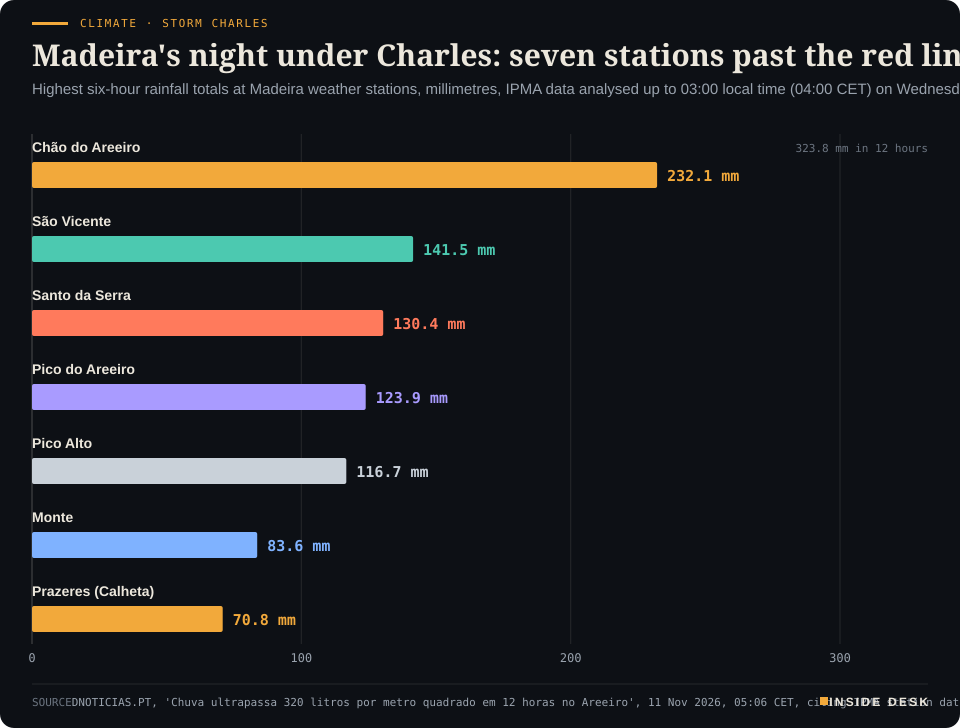
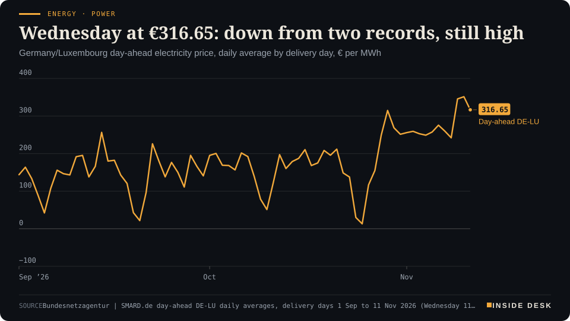
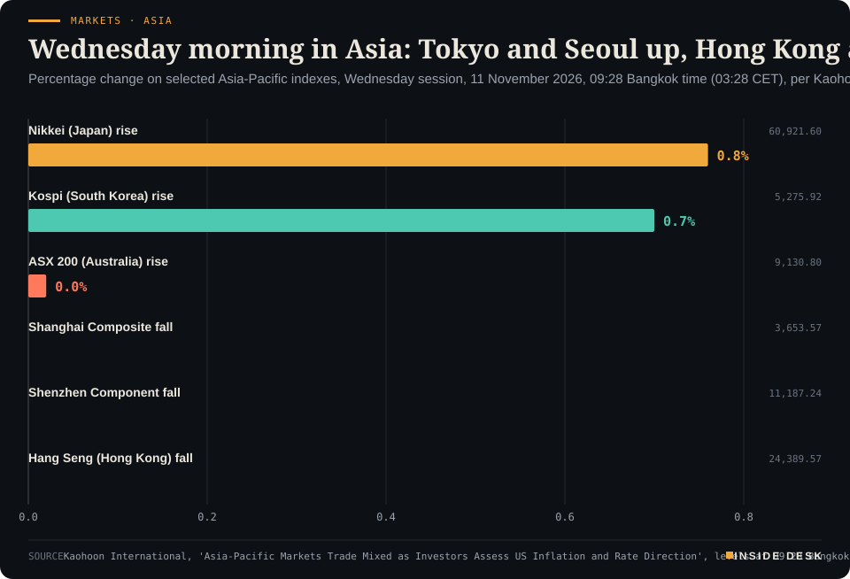

Inside Desk ePaper, Morning ePaper · Wed 11 Nov 2026
Wednesday, 11 November 2026Always free
Inside Desk
Morning ePaperAvailable 06:30 CET · Berlin
Lead · Climate & Weather
Storm Charles hit Madeira overnight and reaches mainland Portugal today under red warnings; the institutions moved first. Also: a Fed speech against a calm Kospi, a trade truce with a date on it, Abu Dhabi day two, and what Wednesday's wind does to your power price.
A storm reached Madeira first and left counted call-outs, a restored power line and a mainland that closed its schools in good time, which is what it looks like when the dull machinery of warnings does its job.
Geo-economics · p. 4
Markets & Macro · p. 5
Energy & Industry · p. 9
The day in one sentenceA storm reached Madeira first and left counted call-outs, a restored power line and a mainland that closed its schools in good time, which is what it looks like when the dull machinery of warnings does its job.
ContentsInside Desk · Morning ePaper11 November 2026
Storm Charles hit Madeira overnight and reaches mainland Portugal today under red warnings; the institutions moved first. Also: a Fed speech against a calm Kospi, a trade truce with a date on it, Abu Dhabi day two, and what Wednesday's wind does to your power price.
11 edition pieces · 11 desks · Available 06:30 CET, 11 November 2026
22 ePaper extras, added , 11 November. They appear only in the ePaper and carry their own time.
The website edition follows at 08:30.
The ePaper rhythm
06:30 Morning ePaper (website edition at 08:30)
17:30 Evening ePaper, updated live until 22:30 with an “Updated” time and a Latest page
Sun 10:00 The Sunday Magazine
Berlin time. Every issue is free.
How to read it
Swipe, use the arrow keys or the page strip. Tap any headline for the reading view. Press / to search, t for contents, +/− to zoom. Download the PDF.
LeadInside Desk · Morning ePaper11 November 2026
Climate & Weather · Lead · 3 min
Charles reached Madeira first and left numbers, not legends. The mainland gets its turn today. The machinery that matters is already switched on: warnings with start times, closed classrooms, airports telling you to ring the airline.
In Portugal, Madeira got Storm Charles first, and it got it at night. By 03:00 local time (04:00 CET) the weather station at Chão do Areeiro, high above Funchal, had collected 323.8 litres of rain per square metre in 12 hours, according to IPMA data analysed by the island’s newspaper DNOTICIAS.PT1. In the last six hours of that window it caught 232.1 mm, almost four times the 60 mm in six hours that triggers a red warning1. Twice the station logged close to 50 mm in a single hour: 49.6 mm at 01:00 and 48.9 mm at 03:00 local time, both above the red line of 40 mm an hour1.
It was not one station. Seven passed the six-hour red threshold, from São Vicente on the north coast at 141.5 mm to Prazeres in Calheta at 70.8 mm1.
Climate · Storm CharlesMadeira's night under Charles: seven stations past the red lineHighest six-hour rainfall totals at Madeira weather stations, millimetres, IPMA data analysed up to 03:00 local time (04:00 CET) on Wednesday 11 November 2026, per DNOTICIAS.PT; IPMA's red-warning threshold is 60 mm in six hours

Bar chart of the highest six-hour rainfall totals at seven Madeira weather stations during Storm Charles, IPMA data up to 03:00 local time (04:00 CET) on 11 November 2026, per DNOTICIAS.PT: Chão do Areeiro 232.1 mm, São Vicente 141.5 mm, Santo da Serra 130.4 mm, Pico do Areeiro 123.9 mm, Pico Alto 116.7 mm, Monte 83.6 mm and Prazeres in Calheta 70.8 mm. All seven are above IPMA's red-warning threshold of 60 mm in six hours. Chão do Areeiro also recorded 323.8 mm in 12 hours.
Source: DNOTICIAS.PT, 'Chuva ultrapassa 320 litros por metro quadrado em 12 horas no Areeiro', 11 Nov 2026, 05:06 CET, citing IPMA station data analysed up to 03:00 local time (04:00 CET); provisional observations, not a final storm total; retrieved 11 Nov 2026 · reported figures · CSV
The wind was strong but, by the numbers, short of the worst. The highest gust before midnight was 128 km/h at Chão do Areeiro at 22:30 local time (23:30 CET), with 126 km/h ten minutes later at Caniçal and 102 km/h at the airport in Santa Cruz2. None of those crossed the red-warning threshold for wind, which in Madeira is set above 130 km/h2.
What the night cost, in call-outs. By 03:00 local time the regional civil protection service had counted 84 incidents3. Floods led with 25, then 16 landslips and 11 fallen trees3. Santa Cruz (27) and Machico (23) accounted for 50 of the 84; Funchal had 113. Desk arithmetic: that is about 60% of all incidents in two neighbouring municipalities on the island’s east side. …
Geo-economicsInside Desk · Morning ePaper11 November 2026
Geo-economics · 2 min
Washington and Beijing each extended their pause by two months. No summit, no speech, just a Federal Register notice and a finance ministry text.
The trade truce between the world’s two largest economies was renewed this week the way most useful things are: in a notice. The US Trade Representative extended all 178 exclusions from Section 301 tariffs on Chinese goods to 11:59 p.m. Eastern Time on 9 January 2027, covering goods entering from 10 November1. That is 164 product categories carried over from earlier relief, plus 14 types of equipment used to make solar products1. “In light of ongoing discussions with China,” the notice says, the extension is “appropriate”1.
Beijing matched it, line by line. China’s State Council Tariff Commission kept its extra 24% tariff on US goods suspended for two more months, to 10 January 2027, Forwarder News reports, citing the finance ministry notice and Seoul Economic Daily; the separate 10% extra duty stays2. The commerce ministry also kept on hold its export-control measures against 16 US entities, and tighter controls on heavy rare-earth metals, battery lithium and graphite and rare-earth technology were postponed to the same date2. Desk arithmetic: if the pause lapses, a US exporter faces a 34% extra Chinese duty instead of 10%.
The small print is the news. China’s text, in Seoul Economic Daily’s machine-assisted translation, says Beijing will “closely monitor follow-up U.S. actions and adjust related retaliatory tariff measures at an appropriate time”, a reference to US plans to replace court-voided emergency tariffs with Section 301 duties2. Washington’s tone is no warmer: on 6 November, Jamieson Greer pressed Vice Premier He Lifeng on farm purchases, rare earths and critical minerals1.
For you. Two months is short for diplomacy and long for a logistics planner. It covers December and ends less than four weeks before Lunar New Year on 6 February, as Forwarder News notes2. If you buy anything with Chinese graphite, magnets or solar parts inside it, the price you are quoted today assumes the truce holds to 10 January. That is a date to put in the diary, not a reason to panic. Nothing here is investment advice.
Geo-economics · Short item · ePaper extra, added
A record October, a 36th straight month of growth, and a quieter statistic: the US share is the highest in 36 years, China's the lowest in 27.
Taiwan’s exports rose 58.9% on the year in October to a record $96.76 billion, and imports rose 75.1% to $68.89 billion, leaving a surplus of $27.88 billion, the finance ministry said1. The previous record, $87.22 billion, was set only in September; October was the 36th month in a row of year-on-year growth2.
The goods are what you would expect. Information, communications and audiovisual products jumped 72.9% to $47.60 billion, and electronic components reached $32.68 billion; together they made up 83% of exports2. Machinery exports rose 35.5%, driven by chipmaking equipment2.
Geo-economics · Brief · ePaper extra, added
Japan’s current account surplus fell to ¥2.3723 trillion in September, the Ministry of Finance said on Tuesday, 45.8% less than a year earlier and well below the ¥3.3544 trillion markets expected; August had been ¥4.062 trillion1. Exports rose 12.8% to ¥10.7283 trillion, but imports rose faster, 17.8% to ¥10.9159 trillion, so the trade balance turned to a deficit of ¥187.5 billion1.
The overall account stays in surplus because it also counts primary income, the returns on investment abroad, and services such as travel; the goods line is the part that swung1. The yen barely moved, at about 158.07 per dollar shortly after the release1. A country’s bill for imports is the least glamorous statistic it publishes, and often the most honest. Nothing here is investment advice.
Markets & MacroInside Desk · Morning ePaper11 November 2026
Markets & Macro · Podium vs Print · 2 min
A Fed president asked for at least two more rate rises, possibly fast. By Wednesday morning Asia's chip screens had read the speech, noted it, and bought anyway. The bond screens were less forgiving.
Podium
“The FOMC "needs to implement at least two more 25-basis-point rate increases". "Excess inflation is unacceptable."”
Lorie Logan, President of the Federal Reserve Bank of Dallas, in remarks prepared for an energy conference of the Dallas and Kansas City Fed banks, as reported by Reuters, Tuesday 10 November 2026, after the US consumer price index for October
Print+0.70% to 5,275.92
Tokyo's Nikkei was up 0.76% at 60,921.60 at the same moment; Hong Kong's Hang Seng was down 0.68% and Shanghai down 0.28%.
South Korea's Kospi, as reported by Kaohoon International, Wednesday 11 November 2026, 09:28 Bangkok time (03:28 CET)
The podium. On Tuesday, after October’s price figures, Dallas Fed President Lorie Logan told an energy conference that the Fed “needs to implement at least two more 25-basis-point rate increases”, Reuters reports1. “Excess inflation is unacceptable,” she said, adding that “it may be possible to move more rapidly this winter than the FOMC has moved so far this fall”1. The Fed’s next meeting is on 8–9 December1.
The print. At 03:28 CET on Wednesday, Seoul’s Kospi was up 0.70% at 5,275.92 and Tokyo’s Nikkei up 0.76% at 60,921.60, while Hong Kong’s Hang Seng was down 0.68% and Shanghai down 0.28%2. Nasdaq 100 futures rose 1.2%, recouping the index’s loss in regular trading, after AI computing provider CoreWeave beat estimates and raised its annual forecast3. In Seoul, SK Hynix rose 3.6% and Samsung Electronics 2.4%4.
Markets & Macro · Short item · ePaper extra, added
Tuesday's numbers arrived as a loss built from data-centre write-downs. Wednesday's market answered in percentages, while Tokyo's chip suppliers rose around it.
SoftBank Group swung to a loss of ¥1.12 trillion, about $7.1 billion, in its fiscal second quarter, after writing down non-refundable advance payments for its US data-centre projects2. Investing.com puts the write-down on those projects at $3.7 billion, “amid falling AI valuations”1. …
Markets & Macro · Brief · ePaper extra, added
There is no trading in cash Treasuries on Wednesday because the US is closed for a holiday1. So the first government-bond reply to Tuesday’s hot price figures came from Asia. Japan’s 10-year yield rose 8.5 basis points to 2.765% and Australia’s 10-year six basis points to 5.05%, tracking Tuesday’s Treasury sell-off1.
The yen was little changed at 158.86 per dollar and the euro at $1.11671. Money markets now price a quarter-point Fed rise in December, and roughly three quarter-point rises by June, Investing.com reports2.
A holiday is a pause in the paperwork, not in the argument. For you: loan and deposit rates follow government-bond yields with a lag, so the useful moment this week is Thursday’s US reopening, not Wednesday’s quiet. Nothing here is investment advice.
Politics & InstitutionsInside Desk · Morning ePaper11 November 2026
Politics & Institutions · 2 min
The chancellor's letter says no deal on the next seven-year budget without a shared commitment to Kyiv. Slovakia calls it blackmail. In Brussels, that is how budget talks usually start.
Friedrich Merz has written to European Council President António Costa that a “collective commitment … without exception” to Ukraine’s funding is an “essential pre-requisite” for “discussing any further matters, particularly those with financial implications”, the Guardian reports from Brussels1. In plain terms: Germany signals it will block the EU’s 2028–34 budget unless every member state contributes to Kyiv.
The ledger behind the letter. Last year the EU agreed to lend Ukraine €90bn, meant to cover two-thirds of its military and civilian costs for 2026 and 20271. Russia’s bombardment has since raised those costs. Zelenskyy has asked for €70bn to close a budget gap; the EU has endorsed that figure and pledged to find €45bn, with the UK and Canada among those expected to cover the rest1. Desk arithmetic: that leaves €25bn for Ukraine’s other allies to find.
Who stays out. Hungary, Slovakia and Czechia opted out of the €90bn loan and have indicated they will stay out of the next round. Bulgaria has now joined them1. “What the chancellor is doing is typical blackmail, and I will not give in to it,” Slovakia’s Robert Fico said in Bratislava, next to Czechia’s Andrej Babiš1. Merz’s own complaint is that bilateral help is “carried mostly by only a few member states”1.
The machinery. Berlin also wants decisions on funding Ukraine moved from unanimity to qualified-majority voting, so a single government cannot block them1. Costa’s office confirmed it had received the letter. It said Ukraine would come up at the informal summit in Dublin this Friday and at a special budget summit on 26–27 November1. Costa wants a budget deal by the end of the year1.
The timing matters. …
Politics & Institutions · Short item · ePaper extra, added
A procedural vote ends, for this session, an impeachment push led by one of Hegseth's own party. The bigger change comes in January.
The US House of Representatives voted 211 to 204 on Tuesday to refer articles of impeachment against Defense Secretary Pete Hegseth to committee, NPR reports1,2. In practice, that ends the effort for now. The roll call, taken at 00:02 CET, split almost exactly on party lines: Republicans 210 to 1 in favour of referral, Democrats 203 against, one independent in favour2. Referral rules out a floor vote and makes it very unlikely the measure will be taken up before this session of Congress expires1.
The articles came from a Republican, Thomas Massie of Kentucky. …
Israel’s new Knesset was sworn in on Tuesday, and the opposition used its majority straight away to request a vote on a new speaker, the Guardian reports1. Replacing Netanyahu loyalist Amir Ohana would let the six opposition parties set the agenda even if coalition talks fail1. Ohana has scheduled the vote for next Tuesday, the latest date possible1.
Former military chief Gadi Eisenkot holds the presidential mandate and has six weeks to form a government; if he fails, a second candidate, probably Netanyahu, gets a chance1. His Yashar party tabled bills moments after the ceremony: term limits for prime ministers, a state commission of inquiry into 7 October 2023, and measures to revoke the judicial overhaul1. President Isaac Herzog urged lawmakers to avoid a second election: “Reach out a hand for compromise, even between rivals.”1
Coalitions take weeks. Control of a chamber’s calendar can take a single vote.
Psychology & BehaviourInside Desk · Morning ePaper11 November 2026
Psychology & Behaviour · 2 min
An Uppsala study says premenstrual dysphoric disorder is not one clock but several. The methods section is careful, and worth reading for what it does not claim.
The Annex reads the method behind the headline. Today’s: Uppsala University says premenstrual dysphoric disorder (PMDD), the severe form of premenstrual syndrome, “does not follow any universal pattern” but falls into three subtypes1. The paper, led by Ella Schleimann-Jensen and Erika Comasco, appeared in Nature Communications on Tuesday2.
The design. Women with PMDD and healthy controls rated their symptoms every day for two menstrual cycles on an online version of a standard scale, the Daily Record of Severity of Problems, with 21 items each scored from 1 (“not at all”) to 6 (“extreme”)2. The diagnosis was prospective: symptoms had to rise by more than 50% from the follicular to the luteal phase2. Participants came from the screening phase of two Uppsala drug trials, one of escitalopram and one of a progesterone-receptor modulator, recruited through newspaper, campus and social media adverts2.
The result. Statistical modelling of the diaries found three groups: severe PMDD with early onset, about two weeks before menstruation and peaking about five days before; severe PMDD with late onset, rising about ten days before and peaking around the start of menstruation; and a moderate late-onset group peaking about four days before1. Over time, rising anxiety tended to be followed by more irritability, low mood and mood swings1. The paper calls anxiety “a central symptom” in how the episode unfolds2.
The footnotes that matter. The press release says 90 women with PMDD and 40 controls1; the paper reports 44 controls and 134 participants in total2. Small, but it is the kind of thing a reader should check. The authors write that “no separate sample size calculation was performed” for this observational analysis and that it “was not separately preregistered”2. …
Psychology & Behaviour · Short item · ePaper extra, added
A Maryland trial gives generative AI a fair test in pregnancy and early motherhood. The honest null result is the useful one.
A chatbot was supposed to be the cheap answer to a hard problem: support for anxious, tired new mothers at 3 a.m. A University of Maryland trial of 400 pregnant and postpartum patients from racial minority backgrounds suggests it is not enough on its own, Behavioral Health Business reports1.
One group got access to Rosie, a generative AI chatbot trained on evidence-based mental-health content and built to flag possible self-harm for real-time review by a clinical social worker1. The control group received a free children’s book every month for a year and could contact study staff1. The researchers’ conclusion: the chatbot “did not improve the primary outcomes of anxiety or depression at 12 months compared with active control”1.
The details are instructive. Participants earned $0.50 per question to the chatbot, up to $45, to keep them engaged1. Heavier users reported more anxiety but better sleep, and the authors could not say which came first1. Subgroup signals, such as anxiety 4.1 times as prevalent among those caring for babies under seven months, are flagged by the authors themselves as needing cautious reading1.
The best sentence is theirs: perinatal mental health is “shaped by structural stressors, caregiving burden, financial strain, social support, and access to clinical care”1. A chatbot can answer questions. It cannot do the night feed, pay the rent or book the appointment. The researchers suggest such tools work better as an add-on than as the treatment1. That is not a defeat for technology. It is a reminder of what the help actually is: people, time and a working clinic.
Psychology & BehaviourInside Desk · Morning ePaper11 November 2026
Researchers at the University of Tsukuba recorded resting brainwaves from 276 untreated adults aged 18 to 59 with a portable 14-channel headset, and compared them with a standard 20-item self-rating depression questionnaire, according to a report on their Nature Mental Health paper1. A combined index of how rhythm “resets” at one scalp site follow those at another correlated with questionnaire scores at more than 0.61. It separated 116 people with moderate-to-severe symptoms from 114 with low symptoms with about 80% accuracy, after excluding those with mild symptoms1. The team’s own caveat: the findings concern self-reported symptoms, not diagnosis, and need validating in independent populations before clinical use1. A cheap headset that helps someone ask for help sooner would be worth having. Not yet, but worth watching.
Energy & IndustryInside Desk · Morning ePaper11 November 2026
Energy & Industry · 2 min
SMARD's forecast has half as much again wind as Tuesday. It blows hardest at 03:00, when nobody needs it, and that is where Wednesday's price is cheapest.
You already know the headline number: Wednesday’s power was auctioned on Tuesday at a German-Luxembourg daily average of €316.65 per megawatt hour, a step down from two records1. This morning the more useful number sits one table over. SMARD’s generation forecast for Wednesday, which had not yet appeared when we checked on Tuesday afternoon, puts onshore and offshore wind together at about 148.1 gigawatt hours2. Desk arithmetic: that is about 49% more than the 99.1 GWh forecast for Tuesday and roughly double Monday’s 71.6 GWh2.
Energy · PowerWednesday at €316.65: down from two records, still highGermany/Luxembourg day-ahead electricity price, daily average by delivery day, € per MWh

Line chart of the daily average German-Luxembourg day-ahead electricity price from 1 September to 11 November 2026, in euros per megawatt hour. It falls to €13.12 on Sunday 25 October, climbs to €314.85 on Thursday 29 October, and stays between €242.13 and €275.64 on every delivery day from 2 to 8 November. It jumps to €345.64 on Monday 9 November and a record €351.48 on Tuesday 10 November. The latest value is €316.65 for delivery on Wednesday 11 November, €34.83 below Tuesday and still higher than any delivery day before 9 November on the chart.
Source: Bundesnetzagentur | SMARD.de day-ahead DE-LU daily averages, delivery days 1 Sep to 11 Nov 2026 (Wednesday 11 Nov €316.65, auction of 10 Nov), retrieved 11 Nov 2026, 05:17 CET · CC BY 4.0 · CSV
Energy & Industry · Short item · ePaper extra, added
Germany's gas storage operators say supply is secure in a normal or mild winter, and not quite in a very cold one. They ask for rules, not luck.
Germany’s gas storage sites entered the heating season only 61% full on 1 November, nine percentage points short of the 70% legal target, the storage operators’ association INES said on Tuesday1. By Tuesday morning the level had slipped to 58.95%, against a European average of 72.38%, according to figures compiled by the Allgäuer Zeitung2.
INES’s new November scenarios are calm about most winters and blunt about one. With normal or mild temperatures, supply is secure1. In an extremely cold winter like the reference year 2010, demand could not be fully met in January, February and March 2027: the model shows shortfalls of up to 6.6 terawatt hours in a single month, and up to 1.7 TWh on individual January days1. The LNG terminals, with at most 0.8 TWh a day of technical send-out capacity, are already counted at full use in the model1.
The association’s diagnosis is about incentives, not geology. Refilling in 2026 was the lowest on record for the time of year, it says, after heavy withdrawals at the end of last winter and weak economic reasons to fill; in an earlier update it had called 77% technically reachable1. “Low storage levels represent a considerable risk,” said INES managing director Sebastian Heinermann (our translation)1. INES suggests paying the gap between market value and storage cost, or obliging traders to use storage, alongside the state gas reserve the economy ministry has announced1.
For you, this is a scenario, not a warning to hoard. The next INES update is due on 12 January 20271.
Energy & IndustryInside Desk · Morning ePaper11 November 2026
Energy & Industry · Brief · ePaper extra, added
Brent crude futures rose 71 cents, or 0.78%, to $92.20 a barrel by 02:19 CET on Wednesday, after two-month lows in the previous session; US WTI gained 49 cents to $86.531. The reason sits in a ledger, not a speech. The Washington Institute for Near East Policy counted 37 ships attacked in and around the Strait of Hormuz in October, the most in any month since the war began, and 10 so far in November1.
LSEG analysts put the dull point plainly: even with a deal, more flows “would still depend on mine clearance, insurance costs” and shipowners’ willingness to take the risk1. Also on the screen: US crude stocks up 9 million barrels in the week to 6 November, according to market sources citing the American Petroleum Institute1. Nothing here is investment advice.
Money, FX & CommitteesInside Desk · Morning ePaper11 November 2026
Money, FX & Committees · 2 min
The government's economic advisers hand over their annual report today; tomorrow the budget committee starts the all-night clean-up. One is advice, the other is arithmetic, and the order matters.
Today the five economists of the German Council of Economic Experts, chaired by Monika Schnitzer, hand their annual report to Chancellor Friedrich Merz at 12:00 CET and present it to the public at 14:30 CET2. The council says the report covers the economy in 2026 and 2027, how to narrow the financing gaps and net borrowing in the federal budget, and how to revive weak productivity growth in German firms1. Nothing in it is public yet; anyone quoting its numbers before 14:30 is guessing.
What the advisers said last time. In the spring the council forecast only 0.5% growth for this year, largely because of the Iran war; since then the economy has proved more resilient than expected, and AFP expects the forecast to be revised2. In last year’s report the experts criticised the government for spending much of its special funds on “consumptive” outlays rather than investment2. That criticism is the yardstick for today.
Why the timing is pointed. On Thursday the budget committee holds its clean-up session, the Bereinigungssitzung, which the Bundestag’s own information service expects to run “into the early hours of Friday”, with every departmental budget called up again and “numerous changes” still expected3. The budget accompanying act for 2027 is due for final committee discussion the same day3. As of Tuesday morning, the coalition had paused the committee’s clean-up draft while its leaders kept negotiating, with the electricity tax the central dispute4.
The longer number. Merkur, citing Reuters, ZDF and others, reports a planned €118.7 billion of new core borrowing next year, close to €204 billion including the special funds, and an uncovered financing need of around €115 billion for 2028 to 20304. Desk arithmetic: the special funds add roughly €85 billion to next year’s core borrowing.
For you. Read the advisers’ report as a checklist and Thursday’s session as the receipt. …
Money, FX & Committees · Short item · ePaper extra, added
A comparison site's November count of savings banks finds 20 still paying nothing on instant-access money. Fixed terms tell a better story.
The average Sparkasse pays 0.52% a year on instant-access savings (Tagesgeld), according to tagesgeldvergleich.net, which counted 321 savings banks offering such accounts as of 3 November; 20 of them still pay 0.00%1. The classic passbook (Sparbuch) averages 0.32% across 182 Sparkassen, and seven of those pay nothing at all1. …
Money, FX & Committees · Brief · ePaper extra, added
Finance Minister Lars Klingbeil plans to postpone the start of repaying the debt taken on during the coronavirus years from 2028 to 2033, Merkur reports1. The plan has added to the coalition’s budget dispute. Hanno Kube, a professor at Heidelberg University, said the minister was contributing “to the further increase in public debt” and that it fits into “a by now very worrying overall picture” (as quoted by Merkur; our translation)1.
The same report puts the federal government’s uncovered financing need for 2028 to 2030 at around €115 billion1. Desk arithmetic: a five-year delay means the first repayments would fall after that window, not inside it.
The budget committee’s clean-up session starts on Thursday and is expected to run into Friday morning2. For you: a repayment schedule is a promise to your future taxes. Watch whether it survives the session unchanged. Nothing here is investment advice.
Ordinary & Inherited LifeInside Desk · Morning ePaper11 November 2026
Ordinary & Inherited Life · 2 min
The energy industry's own price check shows what a household signing today pays for gas and power. The useful word in it is 'bislang': so far.
If you signed a new gas contract for a detached house today, you would pay on average 14.9 cents per kilowatt-hour, according to the energy industry association BDEW’s latest price check, dated 10 November1. That is 3.8 cents, or 34%, more than at the start of the year1. The figure is for contracts that can be signed now, for a house using 20,000 kWh a year1.
Electricity moved less. A new power contract for a household using 3,500 kWh a year averages 40.1 cents per kWh, 2.9 cents or 8% above January1. Desk arithmetic: on those reference consumptions, the rise since January adds about €760 a year to a new gas contract and about €101.50 to a new power contract.
The sentence that matters most. For customers in running tariffs, the BDEW writes, there have been “bislang keine Auswirkungen”: no effects so far1. Price changes usually take effect at the start of a year, or the price is fixed for a set period1. So the 34% describes the shop window, not most households’ bills.
Why it is not 2022. The association says wholesale gas prices rose because of the Iran war but less steeply than in 2021 and 2022, that there is no shortage of gas supply this time, and that imports are far more diversified1. That is little comfort for a household whose fixed price runs out next month, but it is the difference between an expensive winter and a frightening one.
For you. Find your contract and note two dates: when your fixed price ends and how much notice you must give. If your supplier announces a price rise, German law generally gives you a special right to terminate (Sonderkündigungsrecht); comparing before the letter arrives costs nothing. Moving house or changing supplier? Compare against the 14.9 and 40.1 cents, not against last year’s price.
Ordinary & Inherited Life · Short item · ePaper extra, added
Bird flu took almost 60% of Germany's breeding geese last year. This year's Martinsgans carries the bill.
Today is St Martin’s Day, and the goose on the table costs more. Many direct sellers charged about €20 a kilogram for a goose last year; this year prices are often between €20 and €24, WDR reports, so a whole bird can easily cost more than €1001.
Why. “Almost 60 percent of the entire breeding-goose stock in Germany” fell victim to bird flu last year, Charlotte Wilmes of the North Rhine-Westphalia poultry association told WDR, so fewer young geese could be raised this year1. Feed, energy and staff also cost more1. …
Ordinary & Inherited Life · Brief · ePaper extra, added
The opening of the carnival season today, on 11.11, costs the city of Cologne at least €2.2 million, Radio Köln reports1. The city confirmed €1.9 million for the private security contractor and its subcontractors, including setting up and taking down, plus about €300,000 for extra ambulance services and aid organisations1.
Not included: the many hours worked by city employees. The administration could not say what those cost, nor what the day costs the city in total1. Desk arithmetic: the security contract alone is about 86% of the known €2.2 million.
Barriers, floor plates and hundreds of urinals now line the city centre1. That is the dull machinery of a party: someone invoices it, someone pays it, and if it works nobody notices. For you, if you are going: the fences are not decoration, so follow them.
Tech & ComputeInside Desk · Morning ePaper11 November 2026
Tech & Compute · 2 min
The Munich-area chipmaker forecasts about €20 billion of revenue next year. A fifth of it is meant to come from the unglamorous boxes that feed data centres.
The loudest AI results this season came from the people who design accelerators. The most instructive came on Tuesday from Neubiberg, near Munich, where Infineon makes chips that convert and control electricity. For its fiscal year to the end of September 2027, the company forecasts revenue of about €20 billion, at an assumed $1.15 per euro, and expects revenue from power supplies for data centres to reach “close to €4 billion”1. Desk arithmetic: that is about a fifth of the whole.
The quarter behind it. In July to September, revenue was €4.706 billion, up 19% on the year and 13% on the previous quarter; the segment result, Infineon’s preferred profit measure, was €1.119 billion, a margin of 23.8% against 18.2% a year earlier1. For the full year 2026, revenue was €16.353 billion, up 12%1. Growth came from automotive, green industrial power and power and sensor systems; connected secure systems declined1. The shares rose about 6% in Frankfurt by late morning on Tuesday, according to dpa-AFX2.
The dull machinery. Data centres are, among other things, electricity customers, and their power has to be converted and controlled before it reaches a chip. Infineon names data centre power supplies, the “expansion and modernization of energy infrastructure”, electromobility and software-defined vehicles as the drivers, said chief executive Jochen Hanebeck1. Those are customers with grid connections, factories and fleet orders, not only research budgets.
What the money costs. Infineon plans to invest €3.0 to 3.5 billion in fiscal 2027 and expects free cash flow of about €1.8 billion, after €993 million in 20261. Desk arithmetic: the planned investment is larger than this year’s entire free cash flow, by a factor of about three to three and a half. The board wants to lift the dividend by three cents to €0.381.
Tech & Compute · Short item · ePaper extra, added
The world's largest contract chipmaker publishes its sales every month. October's number says the factories are still running hot, whatever the share prices do.
Some companies wait three months to tell you how they are doing. TSMC tells you every month. On Tuesday it reported October revenue of NT$586.89 billion, about $17.88 billion, up 59.7% on a year earlier and 14.7% on September1. CNBC attributes it to strong demand for advanced chips as big technology companies keep investing in AI1.
The monthly figure is a sales total, not a profit, but it is hard to fake and arrives fast. It also squares with the customs ledger: Taiwan’s integrated circuit exports rose 63.0% in October to $31.17 billion, the finance ministry’s figures show2. Machinery exports, driven by chipmaking equipment as manufacturers expand capacity, rose 35.5%2.
The context is a jumpy market. …
Tech & Compute · Brief · ePaper extra, added
AMD has guided fourth-quarter revenue to about $17 billion, plus or minus 3%, while Intel guided to $15–16 billion for the same months, TechRadar notes; if both land inside their ranges, AMD will outearn Intel in a quarter for the first time1. Intel’s guide includes about $300 million of lost revenue from the 14 October explosion at its Kiryat Gat plant in Israel, its finance chief said1.
The crossover is about what is sold, not how many. Intel still held 65.9% of the x86 processor market in the second quarter, per Mercury Research1. AMD’s data-centre revenue was $8.5 billion in the third quarter, and its chief financial officer expects AI accelerators and racks to outsell its server CPUs this quarter1. The ramp has a bill: AMD’s inventory rose about $3 billion to $11.5 billion, and free cash flow was $554 million1. Nothing here is investment advice.
Health & CareInside Desk · Morning ePaper11 November 2026
Health & Care · 2 min
The surveillance week says 'slowly increasing'. That is the most valuable phrase in public health, because it arrives before the queues.
Europe’s respiratory season has a shape this week, and it is not the one you would guess. In its week-44 overview, published on 9 November, the European Centre for Disease Prevention and Control (ECDC) says consultation rates for respiratory illness are “slowly increasing” but still at low or baseline levels in every reporting EU/EEA country1. The main contributor is SARS-CoV-2, with median test positivity of 11% in both primary and secondary care1. A week earlier the figures were 5.2% in primary care and 4.8% in hospitals2. Desk arithmetic: roughly a doubling in one reporting week, from a low base.
Flu is the other half. ECDC puts influenza test positivity at around 5% and says detections have been consistently above inter-epidemic levels since week 37, “but the epidemic has not yet started”1. The viruses are type A, mostly A(H1N1)pdm09; most hospital detections are in adults over 651. RSV remains “very low”1.
Germany looks similar, a week behind in the published data. The Robert Koch-Institut’s report for 26 October to 1 November found respiratory viruses in 58 of 90 sentinel samples, mostly rhino- and enteroviruses (43%); influenza A was in 6% and SARS-CoV-2 in 4%, and no RSV was found3. Among hospital patients with severe respiratory infections, 4% had a Covid-19 diagnosis and 3% influenza3. Wastewater shows SARS-CoV-2 now circulating nationwide, still clearly below last year’s level but rising for several weeks; the flu load is edging up too3.
None of this is an alarm. It is the dull machinery doing what it is paid for: sentinel doctors swabbing, labs typing, wastewater plants sampling, two agencies writing “low but rising” in time for anyone who wants to act on it. The time to arrange a jab, if your doctor recommends one, is while the line reads “not yet started”.
Health & Care · Short item · ePaper extra, added
A rare, benign but disabling tumour gets another option. The useful numbers are in the trial, not the press release.
On Tuesday the US Food and Drug Administration approved pimicotinib (brand name Pimjetmi, from EMD Serono), a kinase inhibitor, for adults with symptomatic tenosynovial giant cell tumour, a growth in the lining of joints and tendons, when surgery could worsen function or cause severe harm1.
The evidence is one randomised, double-blind trial, MANEUVER, which assigned patients two to one to 50 mg of pimicotinib or placebo once a day1. At week 25, an independent blinded review found the tumour had shrunk enough to count as a response in 56% of the pimicotinib group against 3.2% on placebo1. Median duration of response was not reached; 91% of responders had lasted at least six months and 77% at least 121. …
Health & Care · Brief · ePaper extra, added
The European Medicines Agency lists Emend (aprepitant), used to prevent nausea and vomiting caused by chemotherapy, as a shortage that began on 6 November1. Merck Sharp & Dohme is withdrawing it permanently for commercial reasons, not because of a quality or safety problem, and expects it gone from all EU/EEA countries by May 20281. Other aprepitant medicines and the infusion Ivemend (fosaprepitant) remain alternatives; the gap is for children from six months, for whom “no other medicine is available” as an oral suspension1. EDQM has guidance for pharmacists to prepare a liquid from adult capsules1. If you or your child takes it, EMA’s advice is simple: speak to your pharmacist well before supply runs out, and do not stop without asking1.
Security & OrderInside Desk · Morning ePaper11 November 2026
Security & Order · 2 min
Moscow brought a map, Kyiv brought a list, and Washington, by Zelenskyy's account, checked the map. The second session starts at 09:00 CET. Count what can be counted.
The second day of talks between Ukraine, Russia and the United States in Abu Dhabi is due to begin at 09:00 CET, RaiNews reports, citing Tass2. Overnight, the first day was reread by each side in its own light. The useful parts are the small, checkable ones.
The map. President Zelenskyy said Russia had claimed at the table that it occupied half of Donbas. “This is the problem. Putin lives in a different reality,” he wrote, adding that “the American side confirmed the Ukrainian assessment of what is happening on the battlefield”1. That is one side’s account of what another side said. It is still worth noting: talks only work when people at least agree on the facts.
The list. Ukrainska Pravda, citing a source close to Kyiv’s delegation, reports that the parties agreed on a “large-scale” prisoner exchange “in the near future”2. No date or number has been published, and neither Moscow nor Washington has confirmed it in the reports we checked. Zelenskyy called the session “constructive and fairly substantive” and said the release of prisoners is a priority2.
The truce on offer. Foreign Minister Andrii Sybiha said Ukraine had handed partners its own proposal for a ceasefire covering the energy sector and the Black Sea and was waiting for a Russian reply2. He also told Reuters he had asked Marco Rubio to speed up interceptor deliveries1. On Tuesday, Sergei Lavrov said Russia would not accept “another truce or another ceasefire” without knowing what follows2.
The architecture. Zelenskyy said the agenda included a new security architecture for Europe, but that “nobody saw the documents” the Americans discussed with the Russians1. He asked Europe to name its own negotiator “this month, not later”2.
For you: ignore the adjectives and look at the inventory. Partial truces, prisoner swaps and a named European envoy are things a ministry can sign, log and check. If day two moves any of them from a source’s notes into an official statement, that is progress, however unexciting it sounds.
Security & Order · Short item · ePaper extra, added
Ukraine's drones reach Russia's Baltic oil port again. Some of the night's trouble landed on NATO's side of the line.
While negotiators slept in Abu Dhabi, a drone attack set fire to the port area of Ust-Luga, one of Russia’s most important western oil-export hubs. “A UAV attack hit the port area of Ust-Luga, causing a fire,” Leningrad regional governor Aleksandr Drozdenko wrote on Telegram; crews were working to put it out1. The port has been hit repeatedly before1.
The same night, Lithuania issued red air alerts for Kaunas, Panevėžys and Druskininkai and the districts of Prienai, Lazdijai, Kėdainiai, Pasvalys and Biržai over a possible drone, Daily Baltic reports, citing LRT2. …
Security & Order · Brief · ePaper extra, added
Italy’s thirteenth package of military aid for Ukraine has been signed by Foreign Minister Antonio Tajani and Defence Minister Guido Crosetto. It still needs Economy Minister Giancarlo Giorgetti, who was at Ecofin in Brussels and, because the document is classified, could not sign it remotely, Il Sole 24 Ore reports1. Prime Minister Giorgia Meloni called it “a temporary physical impediment”1.
The politics sits elsewhere. Matteo Salvini’s League wants to stop money and weapons going to Kyiv, and the next real test is the framework decree for 20271. Crosetto says Ukraine now needs means against faster drones that target civilian objects1. A wet-ink signature is old-fashioned. That is part of how a ministry keeps classified decisions controlled.
Climate & WeatherInside Desk · Morning ePaper11 November 2026
Climate & Weather · Short item · ePaper extra, added
At COP31 the most useful announcement was a procedure. That is a compliment.
Most summit news is a number someone hopes for. This one is a process someone will use. In Antalya on Tuesday the Green Climate Fund (GCF) and the Adaptation Fund (AF) launched an “AF-GCF Scaling-Up Framework Operational Guidance”1. In plain words: the two funds will jointly pick completed or advanced Adaptation Fund projects with strong results and work them up into larger investments that the GCF may finance1. Each project still needs the country’s priority and each fund’s normal approval1.
Why it matters is in one sentence from Mikko Ollikainen, head of the Adaptation Fund: projects that have gone on to receive GCF money “have attracted an average of $4 for every $1 invested”, and in half of those cases the same partner did the scaling-up1. GCF chief Mafalda Duarte says the point is that countries do not have “to start from scratch”1.
Keep the scale honest. The GCF says it has $22.3 billion committed across more than 130 countries; the Adaptation Fund is a $2 billion-plus fund that gives only grants1. UNEP’s Adaptation Gap Report 2026, cited by Down To Earth, puts international public adaptation finance at $28.2–31.7 billion in 2024 against needs of $305 billion a year by 20352. And the proposal for a separate COP31 agenda item on tripling adaptation finance was dropped2.
So this does not close the gap. It does something smaller and more reliable: it stops good projects dying at the pilot stage because the next application form starts on page one. Adaptation is mostly drainage, seed banks and early-warning sirens. It scales through paperwork that works.
Climate & Weather · Brief · ePaper extra, added
Spain’s weather service, AEMET, expects Wednesday to be “el día más adverso del episodio”, with Charles entering through the south-west of the peninsula1. Its special warning, issued at 19:19 on Tuesday, gives a 70% probability and runs to Thursday1. From midday gusts of 100–120 km/h are possible not only on mountains but in lowlands of southern Castilla y León, Extremadura and western Andalucía, with a chance of tornadoes or waterspouts in the Gulf of Cádiz and seas of 5 to 6 metres1. The line to read twice is about land: across the whole episode, totals may locally exceed 300 mm in the Sistema Central, where summer fires raise the risk of landslides1. A burnt slope does not hold water. The warning says so before the mud does.
Charts and dataInside Desk · Morning ePaper11 November 2026
Charts and data
Energy · PowerWednesday at €316.65: down from two records, still highGermany/Luxembourg day-ahead electricity price, daily average by delivery day, € per MWh
Line chart of the daily average German-Luxembourg day-ahead electricity price from 1 September to 11 November 2026, in euros per megawatt hour. It falls to €13.12 on Sunday 25 October, climbs to €314.85 on Thursday 29 October, and stays between €242.13 and €275.64 on every delivery day from 2 to 8 November. It jumps to €345.64 on Monday 9 November and a record €351.48 on Tuesday 10 November. The latest value is €316.65 for delivery on Wednesday 11 November, €34.83 below Tuesday and still higher than any delivery day before 9 November on the chart.
Source: Bundesnetzagentur | SMARD.de day-ahead DE-LU daily averages, delivery days 1 Sep to 11 Nov 2026 (Wednesday 11 Nov €316.65, auction of 10 Nov), retrieved 11 Nov 2026, 05:17 CET · CC BY 4.0 · CSV
Latest values
Series
Value
Date
Chart
Day-ahead DE-LU
316.65
11 Nov 2026
Wednesday at €316.65: down from two records, still high
Last data point of each series in the charts above, from the Inside Desk data archive. Sources under each chart.
Back pageInside Desk · Morning ePaper11 November 2026
Before you close the tab
The day in one sentence
A storm reached Madeira first and left counted call-outs, a restored power line and a mainland that closed its schools in good time, which is what it looks like when the dull machinery of warnings does its job.
One thing you can do this week
Pick one day a month, say the first Sunday, and read your own meters: electricity, gas or the oil gauge, and the water meter if you have one. Write the numbers on one line in a notebook, with the date. It takes four minutes. After a winter you will know your house better than any bill can tell you, and a surprise will look like a surprise instead of like weather.
A habit, not advice.
What went right
In Kerala, a road was going to take the trees, and the orchids growing on them with it. Researchers collected 27,324 of those orchids from felled or condemned trees and planted them on trees at a beach and two urban wetlands 1. After 12 to 24 months more than 19,500, nearly 71%, were still alive; of the 6,126 endemic orchids, nearly 55% survived, and many flowered and set seed 1. "That was a really big surprise," said Viswambharan Sarasan of the Royal Botanic Gardens, Kew 1. At one park, QR tags on ten species drew more than 126,000 scans in two years 1. The authors call such rescue "a last resort" 1. A last resort that works is still a resort worth having.
In euros at home
At 05:13 CET this morning the German average price for heating oil was €161.82 per 100 litres at a 3,000-litre order, 5.2% cheaper than a week earlier, according to the comparison site esyoil 2. The four-week high was €174.31 on 25 October 2. Regions differ more than days do: €151.34 in Bremen against €168.51 in Hesse 2. Desk arithmetic: a 3,000-litre fill costs about €4,854.60 at today's average, €374.70 less than at the 25 October high, and the Bremen–Hesse gap alone is about €515 on the same order.
esyoil national and state averages per 100 litres incl. VAT for 3,000 litres of standard low-sulphur heating oil, 11 Nov 2026, 05:13 CET. Your own price depends on postcode, quantity and delivery date. Nothing here is advice.
Small words
Abnahmemenge (order quantity)
The amount you buy in one delivery. Heating-oil prices in Germany are quoted per 100 litres for a given order quantity, and the headline average on comparison sites is set at 3,000 litres for a household 2. Change the quantity and the price per litre changes with it, since a delivery has costs that do not shrink with the order. When you compare a quote with a headline, compare it at the same quantity first.
Commentary for information only. Not investment, legal, tax, medical or political advice. Inside Desk is free and reader-supported. Every number is sourced in the piece it appears in.
This issue has been updated.
All articles in this edition
Climate & Weather · 3 min read
323.8 mm in 12 hours on a Madeira hillside, 84 call-outs, and a mainland that shut its schools before the first gust
Charles reached Madeira first and left numbers, not legends. The mainland gets its turn today. The machinery that matters is already switched on: warnings with start times, closed classrooms, airports telling you to ring the airline.
In Portugal, Madeira got Storm Charles first, and it got it at night. By 03:00 local time (04:00 CET) the weather station at Chão do Areeiro, high above Funchal, had collected 323.8 litres of rain per square metre in 12 hours, according to IPMA data analysed by the island’s newspaper DNOTICIAS.PT1. In the last six hours of that window it caught 232.1 mm, almost four times the 60 mm in six hours that triggers a red warning1. Twice the station logged close to 50 mm in a single hour: 49.6 mm at 01:00 and 48.9 mm at 03:00 local time, both above the red line of 40 mm an hour1.
It was not one station. Seven passed the six-hour red threshold, from São Vicente on the north coast at 141.5 mm to Prazeres in Calheta at 70.8 mm1.
Climate · Storm CharlesMadeira's night under Charles: seven stations past the red lineHighest six-hour rainfall totals at Madeira weather stations, millimetres, IPMA data analysed up to 03:00 local time (04:00 CET) on Wednesday 11 November 2026, per DNOTICIAS.PT; IPMA's red-warning threshold is 60 mm in six hours
Bar chart of the highest six-hour rainfall totals at seven Madeira weather stations during Storm Charles, IPMA data up to 03:00 local time (04:00 CET) on 11 November 2026, per DNOTICIAS.PT: Chão do Areeiro 232.1 mm, São Vicente 141.5 mm, Santo da Serra 130.4 mm, Pico do Areeiro 123.9 mm, Pico Alto 116.7 mm, Monte 83.6 mm and Prazeres in Calheta 70.8 mm. All seven are above IPMA's red-warning threshold of 60 mm in six hours. Chão do Areeiro also recorded 323.8 mm in 12 hours.
Source: DNOTICIAS.PT, 'Chuva ultrapassa 320 litros por metro quadrado em 12 horas no Areeiro', 11 Nov 2026, 05:06 CET, citing IPMA station data analysed up to 03:00 local time (04:00 CET); provisional observations, not a final storm total; retrieved 11 Nov 2026 · reported figures · CSV
The wind was strong but, by the numbers, short of the worst. The highest gust before midnight was 128 km/h at Chão do Areeiro at 22:30 local time (23:30 CET), with 126 km/h ten minutes later at Caniçal and 102 km/h at the airport in Santa Cruz2. None of those crossed the red-warning threshold for wind, which in Madeira is set above 130 km/h2.
What the night cost, in call-outs. By 03:00 local time the regional civil protection service had counted 84 incidents3. Floods led with 25, then 16 landslips and 11 fallen trees3. Santa Cruz (27) and Machico (23) accounted for 50 of the 84; Funchal had 113. Desk arithmetic: that is about 60% of all incidents in two neighbouring municipalities on the island’s east side. A high-voltage cable came down and cut power in Santa Cruz, Machico and Santana; crews from the island’s electricity company worked through the night and, the paper reports, supply has since been restored4.
That is the useful part of a storm story, and it is never the dramatic part. Somebody counts the incidents. Somebody puts a lorry and a chainsaw on the road at three in the morning. Somebody climbs a pole in the rain.
The mainland’s turn. IPMA’s warnings, last updated at 22:23 CET on Tuesday, put Beja, Faro and Setúbal on red for wind from 09:00 to 21:00 local time (10:00 to 22:00 CET), and Évora, Leiria, Lisboa, Portalegre and Santarém on red from 12:00 local time (13:00 CET)5. The text is the same for all eight: gusts up to 120 km/h, up to 140 km/h in the most exposed places5. Rain has its own red layer for Lisboa, Setúbal, Beja and Faro from 10:00 CET, and for Leiria, Santarém, Portalegre and Castelo Branco from 13:00 CET5. IPMA’s Tuesday bulletin said the centre of the low was most likely to pass between Sines and Cabo Carvoeiro, with “elevada incerteza” (high uncertainty) about track and strength, rain that could exceed 100 mm in 24 hours in places and waves that could reach 13 metres at their maximum south of Cabo Raso6.
The state did its part before the first gust. The government kept mainland Portugal on a state of alert for all of Wednesday and closed schools and non-essential public services8. Parks, gardens and woods are off-limits because of falling trees, and so are the coast, riverbanks and flood-prone areas8. The airport operator ANA told Lusa that operations at Lisbon, Faro and Madeira would be constrained, with cancellations expected, and asked passengers to check with their airline before setting off7. On Tuesday the grid operator E-Redes reported faults that left about 2,000 customers without power, mainly in the south8.
What this means for you. If you are in Portugal or flying there today, the instruction is boring and correct: ring the airline, stay off the seafront, keep a phone charged. If you are not, the lesson travels anyway. A good warning has a start time, an end time, a threshold and a list of what closes, published before the event by institutions that will be told on Thursday they overreacted. Let them be told.
Desk comment A storm is measured in millimetres at night and judged in open schools on Friday.
178 exclusions, 24 points on hold, one date: the trade truce now lives until 10 January
Washington and Beijing each extended their pause by two months. No summit, no speech, just a Federal Register notice and a finance ministry text.
The trade truce between the world’s two largest economies was renewed this week the way most useful things are: in a notice. The US Trade Representative extended all 178 exclusions from Section 301 tariffs on Chinese goods to 11:59 p.m. Eastern Time on 9 January 2027, covering goods entering from 10 November1. That is 164 product categories carried over from earlier relief, plus 14 types of equipment used to make solar products1. “In light of ongoing discussions with China,” the notice says, the extension is “appropriate”1.
Beijing matched it, line by line. China’s State Council Tariff Commission kept its extra 24% tariff on US goods suspended for two more months, to 10 January 2027, Forwarder News reports, citing the finance ministry notice and Seoul Economic Daily; the separate 10% extra duty stays2. The commerce ministry also kept on hold its export-control measures against 16 US entities, and tighter controls on heavy rare-earth metals, battery lithium and graphite and rare-earth technology were postponed to the same date2. Desk arithmetic: if the pause lapses, a US exporter faces a 34% extra Chinese duty instead of 10%.
The small print is the news. China’s text, in Seoul Economic Daily’s machine-assisted translation, says Beijing will “closely monitor follow-up U.S. actions and adjust related retaliatory tariff measures at an appropriate time”, a reference to US plans to replace court-voided emergency tariffs with Section 301 duties2. Washington’s tone is no warmer: on 6 November, Jamieson Greer pressed Vice Premier He Lifeng on farm purchases, rare earths and critical minerals1.
For you. Two months is short for diplomacy and long for a logistics planner. It covers December and ends less than four weeks before Lunar New Year on 6 February, as Forwarder News notes2. If you buy anything with Chinese graphite, magnets or solar parts inside it, the price you are quoted today assumes the truce holds to 10 January. That is a date to put in the diary, not a reason to panic. Nothing here is investment advice.
Desk comment A truce renewed in two-month slices is not peace. It is a calendar, and calendars can be planned around.
$96.76 billion in a month: Taiwan's exports now lean west
A record October, a 36th straight month of growth, and a quieter statistic: the US share is the highest in 36 years, China's the lowest in 27.
Taiwan’s exports rose 58.9% on the year in October to a record $96.76 billion, and imports rose 75.1% to $68.89 billion, leaving a surplus of $27.88 billion, the finance ministry said1. The previous record, $87.22 billion, was set only in September; October was the 36th month in a row of year-on-year growth2.
The goods are what you would expect. Information, communications and audiovisual products jumped 72.9% to $47.60 billion, and electronic components reached $32.68 billion; together they made up 83% of exports2. Machinery exports rose 35.5%, driven by chipmaking equipment2.
The destinations are the more durable story. The US took a record $32.93 billion, 34% of the month’s exports2. Over January to October, the ministry’s statistics chief Beatrice Tsai said, the US share was 31.7%, its highest in 36 years, while China and Hong Kong fell to 23.8%, their lowest in 27 years2. She put it down to supply chains shifting amid US–China tensions and to AI demand2.
Desk arithmetic: in ten months Taiwan sold $758.29 billion abroad, so the ministry’s expectation of more than $900 billion for 2026 needs roughly $142 billion from November and December; the ministry’s November forecast of $94.2–96.7 billion alone covers about two-thirds of that2. Supply chains do not move by speech; they move by invoice, one container at a time, and this is the ledger that records it.
Appears only in the ePaper · Commentary for information only. Not advice.
Geo-economics · Brief · ePaper extra, added
Japan's surplus shrinks to ¥2.37 trillion as imports outrun exports
September's current account was 45.8% smaller than a year earlier, and goods trade slipped into deficit.
Japan’s current account surplus fell to ¥2.3723 trillion in September, the Ministry of Finance said on Tuesday, 45.8% less than a year earlier and well below the ¥3.3544 trillion markets expected; August had been ¥4.062 trillion1. Exports rose 12.8% to ¥10.7283 trillion, but imports rose faster, 17.8% to ¥10.9159 trillion, so the trade balance turned to a deficit of ¥187.5 billion1.
The overall account stays in surplus because it also counts primary income, the returns on investment abroad, and services such as travel; the goods line is the part that swung1. The yen barely moved, at about 158.07 per dollar shortly after the release1. A country’s bill for imports is the least glamorous statistic it publishes, and often the most honest. Nothing here is investment advice.
Appears only in the ePaper · Commentary for information only. Not advice.
Markets & Macro · 2 min read
Podium vs Print: "Excess inflation is unacceptable" and a Kospi up 0.70%
A Fed president asked for at least two more rate rises, possibly fast. By Wednesday morning Asia's chip screens had read the speech, noted it, and bought anyway. The bond screens were less forgiving.
Podium
“The FOMC "needs to implement at least two more 25-basis-point rate increases". "Excess inflation is unacceptable."”
Lorie Logan, President of the Federal Reserve Bank of Dallas, in remarks prepared for an energy conference of the Dallas and Kansas City Fed banks, as reported by Reuters, Tuesday 10 November 2026, after the US consumer price index for October
Print+0.70% to 5,275.92
Tokyo's Nikkei was up 0.76% at 60,921.60 at the same moment; Hong Kong's Hang Seng was down 0.68% and Shanghai down 0.28%.
South Korea's Kospi, as reported by Kaohoon International, Wednesday 11 November 2026, 09:28 Bangkok time (03:28 CET)
The podium. On Tuesday, after October’s price figures, Dallas Fed President Lorie Logan told an energy conference that the Fed “needs to implement at least two more 25-basis-point rate increases”, Reuters reports1. “Excess inflation is unacceptable,” she said, adding that “it may be possible to move more rapidly this winter than the FOMC has moved so far this fall”1. The Fed’s next meeting is on 8–9 December1.
The print. At 03:28 CET on Wednesday, Seoul’s Kospi was up 0.70% at 5,275.92 and Tokyo’s Nikkei up 0.76% at 60,921.60, while Hong Kong’s Hang Seng was down 0.68% and Shanghai down 0.28%2. Nasdaq 100 futures rose 1.2%, recouping the index’s loss in regular trading, after AI computing provider CoreWeave beat estimates and raised its annual forecast3. In Seoul, SK Hynix rose 3.6% and Samsung Electronics 2.4%4.
Markets · AsiaWednesday morning in Asia: Tokyo and Seoul up, Hong Kong and China downPercentage change on selected Asia-Pacific indexes, Wednesday session, 11 November 2026, 09:28 Bangkok time (03:28 CET), per Kaohoon International

Bar chart of Wednesday 11 November 2026 percentage changes in Asia at 03:28 CET, per Kaohoon International: Nikkei up 0.76 percent to 60,921.60, Kospi up 0.70 percent to 5,275.92, ASX 200 up 0.02 percent to 9,130.80, Shanghai Composite down 0.28 percent to 3,653.57, Shenzhen Component down 0.48 percent to 11,187.24 and Hang Seng down 0.68 percent to 24,389.57. These are intraday snapshot levels, not closes.
Source: Kaohoon International, 'Asia-Pacific Markets Trade Mixed as Investors Assess US Inflation and Rate Direction', levels at 09:28 Bangkok time (03:28 CET), 11 Nov 2026; intraday snapshot, not closing levels; retrieved 11 Nov 2026 · reported figures · CSV
The gap. The screens did not ignore the speech; they priced it where it bites. Japan’s 10-year yield rose 8.5 basis points to 2.765% and Australia’s 10-year six basis points to 5.05%3. Bonds took the Fed president at her word. Chip shares took a quarterly report at its word. Both can be true for a morning. Convera’s Steven Dooley put it plainly: “AI valuations are a hot story, but the main driver is interest rates”3. Wall Street had already given its verdict on Tuesday: the Dow fell 0.30% to 52,231.89, the S&P 500 0.38% to 7,520.93 and the Nasdaq 0.74% to 25,065.872.
What the speech left out. The pace. Logan herself said “the exact pace of increases could depend on the near-term economic and financial environment”1, which is a polite way of saying the screens get a vote too. Oil, the input that started much of this, barely moved: Brent was $92.17 early on Wednesday, up 68 cents, after settling at $91.49 on Tuesday, down $1.082. Desk arithmetic: Wednesday’s early gain recovers about 63% of Tuesday’s fall.
For you. Read the condition, not the headline. A Fed president asked; a committee has not voted. Today the US cash bond market is shut for a holiday3, so Thursday is the first full reply. Nothing here is investment advice.
Desk comment A speech tells you what a committee fears. A price tells you what a crowd will pay to stop worrying.
Markets & Macro · Short item · ePaper extra, added
¥1.12 trillion of loss, down as much as 11%: SoftBank's results meet Tokyo
Tuesday's numbers arrived as a loss built from data-centre write-downs. Wednesday's market answered in percentages, while Tokyo's chip suppliers rose around it.
SoftBank Group swung to a loss of ¥1.12 trillion, about $7.1 billion, in its fiscal second quarter, after writing down non-refundable advance payments for its US data-centre projects2. Investing.com puts the write-down on those projects at $3.7 billion, “amid falling AI valuations”1. On Wednesday the shares fell as much as 11% in Tokyo1; CNBC TV18 reported an 8% drop earlier in the session2.
The contrast in the same room. The rest of Tokyo’s technology board went the other way. TDK gained 3.43%, Kioxia 2.99% and Murata Manufacturing 2.65%1. In Seoul, SK Hynix rose 3.6%1. The suppliers that ship components and invoice for them were bought; the investor that paid in advance for capacity was sold.
Why it matters beyond one company. A write-down is an accountant’s way of saying a prepayment will not come back as planned. It is unglamorous and it is honest: the number is now in the books, not in a presentation. Desk arithmetic: SoftBank’s $3.7 billion write-down is a little over half of its $7.1 billion quarterly loss.
For you. If you hold a fund with Japanese technology exposure, the lesson is about spread: the same theme produced both an 11% intraday fall and 3% gains on one morning1. Look at what your fund actually owns, not the theme on its label. Nothing here is investment advice.
Appears only in the ePaper · Commentary for information only. Not advice.
Markets & Macro · Brief · ePaper extra, added
No Treasury trading today, so Tokyo's 2.765% does the talking
The US cash bond market is shut for a holiday. Asia's government bonds were open, and they sold.
There is no trading in cash Treasuries on Wednesday because the US is closed for a holiday1. So the first government-bond reply to Tuesday’s hot price figures came from Asia. Japan’s 10-year yield rose 8.5 basis points to 2.765% and Australia’s 10-year six basis points to 5.05%, tracking Tuesday’s Treasury sell-off1.
The yen was little changed at 158.86 per dollar and the euro at $1.11671. Money markets now price a quarter-point Fed rise in December, and roughly three quarter-point rises by June, Investing.com reports2.
A holiday is a pause in the paperwork, not in the argument. For you: loan and deposit rates follow government-bond yields with a lag, so the useful moment this week is Thursday’s US reopening, not Wednesday’s quiet. Nothing here is investment advice.
Appears only in the ePaper · Commentary for information only. Not advice.
Politics & Institutions · 2 min read
€90 billion lent, €45 billion pledged, four countries out: Merz puts Ukraine on the EU's bill
The chancellor's letter says no deal on the next seven-year budget without a shared commitment to Kyiv. Slovakia calls it blackmail. In Brussels, that is how budget talks usually start.
Friedrich Merz has written to European Council President António Costa that a “collective commitment … without exception” to Ukraine’s funding is an “essential pre-requisite” for “discussing any further matters, particularly those with financial implications”, the Guardian reports from Brussels1. In plain terms: Germany signals it will block the EU’s 2028–34 budget unless every member state contributes to Kyiv.
The ledger behind the letter. Last year the EU agreed to lend Ukraine €90bn, meant to cover two-thirds of its military and civilian costs for 2026 and 20271. Russia’s bombardment has since raised those costs. Zelenskyy has asked for €70bn to close a budget gap; the EU has endorsed that figure and pledged to find €45bn, with the UK and Canada among those expected to cover the rest1. Desk arithmetic: that leaves €25bn for Ukraine’s other allies to find.
Who stays out. Hungary, Slovakia and Czechia opted out of the €90bn loan and have indicated they will stay out of the next round. Bulgaria has now joined them1. “What the chancellor is doing is typical blackmail, and I will not give in to it,” Slovakia’s Robert Fico said in Bratislava, next to Czechia’s Andrej Babiš1. Merz’s own complaint is that bilateral help is “carried mostly by only a few member states”1.
The machinery. Berlin also wants decisions on funding Ukraine moved from unanimity to qualified-majority voting, so a single government cannot block them1. Costa’s office confirmed it had received the letter. It said Ukraine would come up at the informal summit in Dublin this Friday and at a special budget summit on 26–27 November1. Costa wants a budget deal by the end of the year1.
The timing matters. The letter lands while Russia, Ukraine and the US are meeting in Abu Dhabi2. Whatever is agreed there, someone will have to pay for Ukraine’s grid, its army and its schools next year.
For you: ignore the word “blackmail” and follow the three numbers: €90bn already lent, €45bn pledged and four governments out. EU budget fights almost always end in a late-night compromise. What matters is whether the compromise writes down who pays, not who shouted.
Desk comment A veto threat is a speech. A shared invoice is policy.
Politics & Institutions · Short item · ePaper extra, added
211 to 204: the House sends the Hegseth articles to committee
A procedural vote ends, for this session, an impeachment push led by one of Hegseth's own party. The bigger change comes in January.
The US House of Representatives voted 211 to 204 on Tuesday to refer articles of impeachment against Defense Secretary Pete Hegseth to committee, NPR reports1,2. In practice, that ends the effort for now. The roll call, taken at 00:02 CET, split almost exactly on party lines: Republicans 210 to 1 in favour of referral, Democrats 203 against, one independent in favour2. Referral rules out a floor vote and makes it very unlikely the measure will be taken up before this session of Congress expires1.
The articles came from a Republican, Thomas Massie of Kentucky. He reintroduced them on Monday, accusing Hegseth of high crimes and misdemeanours over the war with Iran, strikes on alleged drug boats, the capture of Venezuela’s Nicolás Maduro without congressional authorisation, and the effort to punish Senator Mark Kelly1. It was his second attempt. The first expired when Speaker Mike Johnson called an early recess before the midterms1.
Hegseth called Massie a “disgruntled and defeated congressman” at a Pentagon press conference: “I stand behind every one of these operations.”1 President Trump said on Monday: “I’ll stand by him.”1
The calendar matters more than the rhetoric. Democrats take the House majority in January and have promised investigations into the Pentagon. Hakeem Jeffries, expected to become Speaker, told NPR of Hegseth: “He’s got to go.”1 A referral to committee is the quietest way a legislature can say “not now”. From January, the committees will belong to the other side.
Six weeks for Eisenkot, one vote for a speaker: Israel's opposition moves first on the Knesset
Too divided to form a government yet, the six opposition parties want the chamber's agenda. The vote is set for next Tuesday.
Israel’s new Knesset was sworn in on Tuesday, and the opposition used its majority straight away to request a vote on a new speaker, the Guardian reports1. Replacing Netanyahu loyalist Amir Ohana would let the six opposition parties set the agenda even if coalition talks fail1. Ohana has scheduled the vote for next Tuesday, the latest date possible1.
Former military chief Gadi Eisenkot holds the presidential mandate and has six weeks to form a government; if he fails, a second candidate, probably Netanyahu, gets a chance1. His Yashar party tabled bills moments after the ceremony: term limits for prime ministers, a state commission of inquiry into 7 October 2023, and measures to revoke the judicial overhaul1. President Isaac Herzog urged lawmakers to avoid a second election: “Reach out a hand for compromise, even between rivals.”1
Coalitions take weeks. Control of a chamber’s calendar can take a single vote.
Appears only in the ePaper · Commentary for information only. Not advice.
Psychology & Behaviour · 2 min read
The Annex: 90 women, two months of diaries, three patterns of PMDD, and a control group that is 40 or 44 depending on where you read
An Uppsala study says premenstrual dysphoric disorder is not one clock but several. The methods section is careful, and worth reading for what it does not claim.
The Annex reads the method behind the headline. Today’s: Uppsala University says premenstrual dysphoric disorder (PMDD), the severe form of premenstrual syndrome, “does not follow any universal pattern” but falls into three subtypes1. The paper, led by Ella Schleimann-Jensen and Erika Comasco, appeared in Nature Communications on Tuesday2.
The design. Women with PMDD and healthy controls rated their symptoms every day for two menstrual cycles on an online version of a standard scale, the Daily Record of Severity of Problems, with 21 items each scored from 1 (“not at all”) to 6 (“extreme”)2. The diagnosis was prospective: symptoms had to rise by more than 50% from the follicular to the luteal phase2. Participants came from the screening phase of two Uppsala drug trials, one of escitalopram and one of a progesterone-receptor modulator, recruited through newspaper, campus and social media adverts2.
The result. Statistical modelling of the diaries found three groups: severe PMDD with early onset, about two weeks before menstruation and peaking about five days before; severe PMDD with late onset, rising about ten days before and peaking around the start of menstruation; and a moderate late-onset group peaking about four days before1. Over time, rising anxiety tended to be followed by more irritability, low mood and mood swings1. The paper calls anxiety “a central symptom” in how the episode unfolds2.
The footnotes that matter. The press release says 90 women with PMDD and 40 controls1; the paper reports 44 controls and 134 participants in total2. Small, but it is the kind of thing a reader should check. The authors write that “no separate sample size calculation was performed” for this observational analysis and that it “was not separately preregistered”2. The dynamic model was limited to four core symptoms because adding more would risk “unreliable estimates given the sample size”2. And the strict 50% threshold, they note, “may limit generalizability to less severe PMDD presentations”2.
What the authors themselves say. Comasco is plain that the study “cannot explain why these differences occur”, and that more research is needed before the patterns can predict one person’s course1.
For you. If you, or someone you live with, recognise this, the most useful tool in the paper is the cheapest: a daily diary over two cycles. It is how the diagnosis was made here, and it gives a doctor something better than memory to work with.
Desk comment A diagnosis is a name for a group. A diary is the record of a person.
Psychology & Behaviour · Short item · ePaper extra, added
400 mothers, a chatbot called Rosie, and a year with no change in anxiety or depression
A Maryland trial gives generative AI a fair test in pregnancy and early motherhood. The honest null result is the useful one.
A chatbot was supposed to be the cheap answer to a hard problem: support for anxious, tired new mothers at 3 a.m. A University of Maryland trial of 400 pregnant and postpartum patients from racial minority backgrounds suggests it is not enough on its own, Behavioral Health Business reports1.
One group got access to Rosie, a generative AI chatbot trained on evidence-based mental-health content and built to flag possible self-harm for real-time review by a clinical social worker1. The control group received a free children’s book every month for a year and could contact study staff1. The researchers’ conclusion: the chatbot “did not improve the primary outcomes of anxiety or depression at 12 months compared with active control”1.
The details are instructive. Participants earned $0.50 per question to the chatbot, up to $45, to keep them engaged1. Heavier users reported more anxiety but better sleep, and the authors could not say which came first1. Subgroup signals, such as anxiety 4.1 times as prevalent among those caring for babies under seven months, are flagged by the authors themselves as needing cautious reading1.
The best sentence is theirs: perinatal mental health is “shaped by structural stressors, caregiving burden, financial strain, social support, and access to clinical care”1. A chatbot can answer questions. It cannot do the night feed, pay the rent or book the appointment. The researchers suggest such tools work better as an add-on than as the treatment1. That is not a defeat for technology. It is a reminder of what the help actually is: people, time and a working clinic.
276 adults, a 14-channel headset, and an EEG index that sorts moderate from low depressive symptoms with about 80% accuracy
Promising for screening. Not a diagnosis, and the authors say so.
Researchers at the University of Tsukuba recorded resting brainwaves from 276 untreated adults aged 18 to 59 with a portable 14-channel headset, and compared them with a standard 20-item self-rating depression questionnaire, according to a report on their Nature Mental Health paper1. A combined index of how rhythm “resets” at one scalp site follow those at another correlated with questionnaire scores at more than 0.61. It separated 116 people with moderate-to-severe symptoms from 114 with low symptoms with about 80% accuracy, after excluding those with mild symptoms1. The team’s own caveat: the findings concern self-reported symptoms, not diagnosis, and need validating in independent populations before clinical use1. A cheap headset that helps someone ask for help sooner would be worth having. Not yet, but worth watching.
Appears only in the ePaper · Commentary for information only. Not advice.
Energy & Industry · 2 min read
The wind came back for Wednesday, but mostly at night
SMARD's forecast has half as much again wind as Tuesday. It blows hardest at 03:00, when nobody needs it, and that is where Wednesday's price is cheapest.
You already know the headline number: Wednesday’s power was auctioned on Tuesday at a German-Luxembourg daily average of €316.65 per megawatt hour, a step down from two records1. This morning the more useful number sits one table over. SMARD’s generation forecast for Wednesday, which had not yet appeared when we checked on Tuesday afternoon, puts onshore and offshore wind together at about 148.1 gigawatt hours2. Desk arithmetic: that is about 49% more than the 99.1 GWh forecast for Tuesday and roughly double Monday’s 71.6 GWh2.
Energy · PowerWednesday at €316.65: down from two records, still highGermany/Luxembourg day-ahead electricity price, daily average by delivery day, € per MWh
Line chart of the daily average German-Luxembourg day-ahead electricity price from 1 September to 11 November 2026, in euros per megawatt hour. It falls to €13.12 on Sunday 25 October, climbs to €314.85 on Thursday 29 October, and stays between €242.13 and €275.64 on every delivery day from 2 to 8 November. It jumps to €345.64 on Monday 9 November and a record €351.48 on Tuesday 10 November. The latest value is €316.65 for delivery on Wednesday 11 November, €34.83 below Tuesday and still higher than any delivery day before 9 November on the chart.
Source: Bundesnetzagentur | SMARD.de day-ahead DE-LU daily averages, delivery days 1 Sep to 11 Nov 2026 (Wednesday 11 Nov €316.65, auction of 10 Nov), retrieved 11 Nov 2026, 05:17 CET · CC BY 4.0 · CSV
The wind keeps night hours. The forecast has wind at about 8,728 megawatts at 03:00 but only about 4,433 MW at 17:002. Desk arithmetic: the night hour gets nearly twice the wind of the teatime hour. The price follows faithfully. 03:00 is Wednesday’s cheapest hour at €200.39, and 17:00 its dearest at €447.651. Solar does not help in the evening either, and on Wednesday it barely helps at noon: SMARD forecasts about 35.5 GWh of solar for the whole day, roughly half Tuesday’s 66.9 GWh2.
Why a 49% gain buys only 10%. Wind and sun are still a small slice of what the country will use. SMARD forecasts consumption of about 1,418 GWh for Wednesday2. Desk arithmetic: forecast wind and solar together cover about 12.9% of it, up from 11.6% on Tuesday and 10.8% on Monday. The rest comes from plants that burn something: on Monday, the last full day of realised data, gas plants delivered about 411.6 GWh, lignite 311.8 GWh and hard coal 122.0 GWh, against 77.8 GWh from wind2. That is why the daily average fell by €34.83, or about 9.9%, and not by half1.
For you. On a fixed tariff, none of this reaches your bill this month. On a dynamic tariff, Wednesday is a night-owl’s day: every hour from 00:00 to 05:00 clears between €200.39 and €215.85, and 16:00 to 19:00 all clear above €3901. Run the dishwasher before bed, charge the car overnight, and treat the forecast as a forecast. The grid operators plan with it. So can you. Nothing here is investment advice.
Desk comment A forecast of wind is not a megawatt. A megawatt at 03:00 is not a megawatt at 17:00.
Energy & Industry · Short item · ePaper extra, added
61% on 1 November, 6.6 TWh short in a frozen March: the storage industry runs its numbers
Germany's gas storage operators say supply is secure in a normal or mild winter, and not quite in a very cold one. They ask for rules, not luck.
Germany’s gas storage sites entered the heating season only 61% full on 1 November, nine percentage points short of the 70% legal target, the storage operators’ association INES said on Tuesday1. By Tuesday morning the level had slipped to 58.95%, against a European average of 72.38%, according to figures compiled by the Allgäuer Zeitung2.
INES’s new November scenarios are calm about most winters and blunt about one. With normal or mild temperatures, supply is secure1. In an extremely cold winter like the reference year 2010, demand could not be fully met in January, February and March 2027: the model shows shortfalls of up to 6.6 terawatt hours in a single month, and up to 1.7 TWh on individual January days1. The LNG terminals, with at most 0.8 TWh a day of technical send-out capacity, are already counted at full use in the model1.
The association’s diagnosis is about incentives, not geology. Refilling in 2026 was the lowest on record for the time of year, it says, after heavy withdrawals at the end of last winter and weak economic reasons to fill; in an earlier update it had called 77% technically reachable1. “Low storage levels represent a considerable risk,” said INES managing director Sebastian Heinermann (our translation)1. INES suggests paying the gap between market value and storage cost, or obliging traders to use storage, alongside the state gas reserve the economy ministry has announced1.
For you, this is a scenario, not a warning to hoard. The next INES update is due on 12 January 20271.
Appears only in the ePaper · Commentary for information only. Not advice.
Energy & Industry · Brief · ePaper extra, added
Brent back at $92.20, and 37 ships attacked in October
Oil bounced off a two-month low in Asian trading as the shipping record from Hormuz outweighed the hopes.
Brent crude futures rose 71 cents, or 0.78%, to $92.20 a barrel by 02:19 CET on Wednesday, after two-month lows in the previous session; US WTI gained 49 cents to $86.531. The reason sits in a ledger, not a speech. The Washington Institute for Near East Policy counted 37 ships attacked in and around the Strait of Hormuz in October, the most in any month since the war began, and 10 so far in November1.
LSEG analysts put the dull point plainly: even with a deal, more flows “would still depend on mine clearance, insurance costs” and shipowners’ willingness to take the risk1. Also on the screen: US crude stocks up 9 million barrels in the week to 6 November, according to market sources citing the American Petroleum Institute1. Nothing here is investment advice.
Appears only in the ePaper · Commentary for information only. Not advice.
Money, FX & Committees · 2 min read
12:00, 14:30, then Thursday at 11:00: two documents decide the budget week
The government's economic advisers hand over their annual report today; tomorrow the budget committee starts the all-night clean-up. One is advice, the other is arithmetic, and the order matters.
Today the five economists of the German Council of Economic Experts, chaired by Monika Schnitzer, hand their annual report to Chancellor Friedrich Merz at 12:00 CET and present it to the public at 14:30 CET2. The council says the report covers the economy in 2026 and 2027, how to narrow the financing gaps and net borrowing in the federal budget, and how to revive weak productivity growth in German firms1. Nothing in it is public yet; anyone quoting its numbers before 14:30 is guessing.
What the advisers said last time. In the spring the council forecast only 0.5% growth for this year, largely because of the Iran war; since then the economy has proved more resilient than expected, and AFP expects the forecast to be revised2. In last year’s report the experts criticised the government for spending much of its special funds on “consumptive” outlays rather than investment2. That criticism is the yardstick for today.
Why the timing is pointed. On Thursday the budget committee holds its clean-up session, the Bereinigungssitzung, which the Bundestag’s own information service expects to run “into the early hours of Friday”, with every departmental budget called up again and “numerous changes” still expected3. The budget accompanying act for 2027 is due for final committee discussion the same day3. As of Tuesday morning, the coalition had paused the committee’s clean-up draft while its leaders kept negotiating, with the electricity tax the central dispute4.
The longer number. Merkur, citing Reuters, ZDF and others, reports a planned €118.7 billion of new core borrowing next year, close to €204 billion including the special funds, and an uncovered financing need of around €115 billion for 2028 to 20304. Desk arithmetic: the special funds add roughly €85 billion to next year’s core borrowing.
For you. Read the advisers’ report as a checklist and Thursday’s session as the receipt. The report cannot change a single line of the budget; the committee can. The dull machinery runs this week in the right order: advice first, arithmetic second, vote later in November. Nothing here is investment advice.
Desk comment Advice is cheap the day before a vote and priceless the morning after.
Money, FX & Committees · Short item · ePaper extra, added
0.52% at the Sparkasse, 2.37% across the market: the cost of loyalty on a call account
A comparison site's November count of savings banks finds 20 still paying nothing on instant-access money. Fixed terms tell a better story.
The average Sparkasse pays 0.52% a year on instant-access savings (Tagesgeld), according to tagesgeldvergleich.net, which counted 321 savings banks offering such accounts as of 3 November; 20 of them still pay 0.00%1. The classic passbook (Sparbuch) averages 0.32% across 182 Sparkassen, and seven of those pay nothing at all1. The site uses the rate for a €25,000 deposit, because more and more savings banks reserve their best rates for balances of €100,000 or more1.
The wider market. Across the 80 instant-access offers in the same site’s comparison, the average is 2.37%1. Desk arithmetic: on €10,000 left for a year, 0.52% earns about €52 and 2.37% about €237, before tax.
Where the Sparkassen hold their own. Fixed terms. The average one-year fixed deposit at a Sparkasse pays 2.20%, against 2.64% across 117 offers in the wider comparison, and the best Sparkasse offer for one year is 3.05%1. Over ten years the savings banks average 3.04%, close to the market’s 3.15%1.
The regional spread. Averages hide a lot. On instant access, Sparkassen in Hamburg average 1.38%, those in Bremen 0.13%1.
For you. Loyalty to your local bank is a fine thing for a current account, where branches and cash machines matter. For money you will not touch for a year, a few minutes with a comparison and the deposit-guarantee details of the bank you choose are worth more than the habit. Nothing here is investment advice.
Sources
Sparkassen-Zinsen im Vergleich — tagesgeldvergleich.net, data as of 3 Nov 2026 (market comparison 11 Nov 2026), retrieved 11 Nov 2026
Appears only in the ePaper · Commentary for information only. Not advice.
Money, FX & Committees · Brief · ePaper extra, added
From 2028 to 2033: the coronavirus debt repayment the budget wants to push back
One of the quieter lines in the 2027 budget fight moves a repayment schedule by five years. A constitutional lawyer is not impressed.
Finance Minister Lars Klingbeil plans to postpone the start of repaying the debt taken on during the coronavirus years from 2028 to 2033, Merkur reports1. The plan has added to the coalition’s budget dispute. Hanno Kube, a professor at Heidelberg University, said the minister was contributing “to the further increase in public debt” and that it fits into “a by now very worrying overall picture” (as quoted by Merkur; our translation)1.
The same report puts the federal government’s uncovered financing need for 2028 to 2030 at around €115 billion1. Desk arithmetic: a five-year delay means the first repayments would fall after that window, not inside it.
The budget committee’s clean-up session starts on Thursday and is expected to run into Friday morning2. For you: a repayment schedule is a promise to your future taxes. Watch whether it survives the session unchanged. Nothing here is investment advice.
Appears only in the ePaper · Commentary for information only. Not advice.
Ordinary & Inherited Life · 2 min read
Ordinary Ledger: gas up 34% for new contracts, and nothing yet for the contract you already have
The energy industry's own price check shows what a household signing today pays for gas and power. The useful word in it is 'bislang': so far.
If you signed a new gas contract for a detached house today, you would pay on average 14.9 cents per kilowatt-hour, according to the energy industry association BDEW’s latest price check, dated 10 November1. That is 3.8 cents, or 34%, more than at the start of the year1. The figure is for contracts that can be signed now, for a house using 20,000 kWh a year1.
Electricity moved less. A new power contract for a household using 3,500 kWh a year averages 40.1 cents per kWh, 2.9 cents or 8% above January1. Desk arithmetic: on those reference consumptions, the rise since January adds about €760 a year to a new gas contract and about €101.50 to a new power contract.
The sentence that matters most. For customers in running tariffs, the BDEW writes, there have been “bislang keine Auswirkungen”: no effects so far1. Price changes usually take effect at the start of a year, or the price is fixed for a set period1. So the 34% describes the shop window, not most households’ bills.
Why it is not 2022. The association says wholesale gas prices rose because of the Iran war but less steeply than in 2021 and 2022, that there is no shortage of gas supply this time, and that imports are far more diversified1. That is little comfort for a household whose fixed price runs out next month, but it is the difference between an expensive winter and a frightening one.
For you. Find your contract and note two dates: when your fixed price ends and how much notice you must give. If your supplier announces a price rise, German law generally gives you a special right to terminate (Sonderkündigungsrecht); comparing before the letter arrives costs nothing. Moving house or changing supplier? Compare against the 14.9 and 40.1 cents, not against last year’s price.
Desk comment The price on the website is for strangers. Your contract is the price for you, until the letter arrives.
Ordinary & Inherited Life · Short item · ePaper extra, added
€20 to €24 a kilo: St Martin's goose costs more, and most of it comes from Poland anyway
Bird flu took almost 60% of Germany's breeding geese last year. This year's Martinsgans carries the bill.
Today is St Martin’s Day, and the goose on the table costs more. Many direct sellers charged about €20 a kilogram for a goose last year; this year prices are often between €20 and €24, WDR reports, so a whole bird can easily cost more than €1001.
Why. “Almost 60 percent of the entire breeding-goose stock in Germany” fell victim to bird flu last year, Charlotte Wilmes of the North Rhine-Westphalia poultry association told WDR, so fewer young geese could be raised this year1. Feed, energy and staff also cost more1. In North Rhine-Westphalia the number of geese slaughtered in 2025 fell to its lowest in ten years: the state’s 18 slaughterhouses processed around 16,000 birds, averaging about 4.5 kilos each, according to the state statistics office IT.NRW1.
The import ledger. Only about 15% of the geese eaten in Germany come from German farms; most come from Poland, where some are offered for €11 or €12 a kilo1. Desk arithmetic: for a 4.5-kilo bird, €20–24 a kilo means €90–108; €11–12 a kilo means €49.50–54.
The quiet substitute. Wilmes sees a trend towards duck, a smaller bird that still feeds three, four or six people depending on size1.
For you. If you want a German goose for Christmas, order early: WDR says German geese could run short before Christmas1. If the price matters more than the postcode, the label will tell you where the bird was raised; read it.
Appears only in the ePaper · Commentary for information only. Not advice.
Ordinary & Inherited Life · Brief · ePaper extra, added
€2.2 million before the first 'Alaaf': what Cologne pays to open the carnival season
Barriers, floor plates and hundreds of urinals: the city's bill for 11.11, and the part it cannot count.
The opening of the carnival season today, on 11.11, costs the city of Cologne at least €2.2 million, Radio Köln reports1. The city confirmed €1.9 million for the private security contractor and its subcontractors, including setting up and taking down, plus about €300,000 for extra ambulance services and aid organisations1.
Not included: the many hours worked by city employees. The administration could not say what those cost, nor what the day costs the city in total1. Desk arithmetic: the security contract alone is about 86% of the known €2.2 million.
Barriers, floor plates and hundreds of urinals now line the city centre1. That is the dull machinery of a party: someone invoices it, someone pays it, and if it works nobody notices. For you, if you are going: the fences are not decoration, so follow them.
Appears only in the ePaper · Commentary for information only. Not advice.
Tech & Compute · 2 min read
Close to €4 billion for the plugs: Infineon's AI story is a power-supply story
The Munich-area chipmaker forecasts about €20 billion of revenue next year. A fifth of it is meant to come from the unglamorous boxes that feed data centres.
The loudest AI results this season came from the people who design accelerators. The most instructive came on Tuesday from Neubiberg, near Munich, where Infineon makes chips that convert and control electricity. For its fiscal year to the end of September 2027, the company forecasts revenue of about €20 billion, at an assumed $1.15 per euro, and expects revenue from power supplies for data centres to reach “close to €4 billion”1. Desk arithmetic: that is about a fifth of the whole.
The quarter behind it. In July to September, revenue was €4.706 billion, up 19% on the year and 13% on the previous quarter; the segment result, Infineon’s preferred profit measure, was €1.119 billion, a margin of 23.8% against 18.2% a year earlier1. For the full year 2026, revenue was €16.353 billion, up 12%1. Growth came from automotive, green industrial power and power and sensor systems; connected secure systems declined1. The shares rose about 6% in Frankfurt by late morning on Tuesday, according to dpa-AFX2.
The dull machinery. Data centres are, among other things, electricity customers, and their power has to be converted and controlled before it reaches a chip. Infineon names data centre power supplies, the “expansion and modernization of energy infrastructure”, electromobility and software-defined vehicles as the drivers, said chief executive Jochen Hanebeck1. Those are customers with grid connections, factories and fleet orders, not only research budgets.
What the money costs. Infineon plans to invest €3.0 to 3.5 billion in fiscal 2027 and expects free cash flow of about €1.8 billion, after €993 million in 20261. Desk arithmetic: the planned investment is larger than this year’s entire free cash flow, by a factor of about three to three and a half. The board wants to lift the dividend by three cents to €0.381.
For you. If you work in German industry, this is the more useful AI headline: the boom pays the firms that supply power electronics, not just the ones with famous chips. A forecast is a promise, though, and Infineon will be judged first on its own guide of about €4.6 billion for October to December1. Nothing here is investment advice.
Desk comment Every model needs a socket. The people who make sockets rarely give keynotes, and quietly send invoices.
NT$586.89 billion in October: TSMC's monthly invoice, up 59.7%
The world's largest contract chipmaker publishes its sales every month. October's number says the factories are still running hot, whatever the share prices do.
Some companies wait three months to tell you how they are doing. TSMC tells you every month. On Tuesday it reported October revenue of NT$586.89 billion, about $17.88 billion, up 59.7% on a year earlier and 14.7% on September1. CNBC attributes it to strong demand for advanced chips as big technology companies keep investing in AI1.
The monthly figure is a sales total, not a profit, but it is hard to fake and arrives fast. It also squares with the customs ledger: Taiwan’s integrated circuit exports rose 63.0% in October to $31.17 billion, the finance ministry’s figures show2. Machinery exports, driven by chipmaking equipment as manufacturers expand capacity, rose 35.5%2.
The context is a jumpy market. On Tuesday TSMC shares closed 2.24% higher amid broader volatility in Taiwan, and Taiwan’s regulator has just tightened short-selling rules, cutting the daily limit on intraday short-selling orders from 30% to 3%1. TSMC has said it expects capital spending from 2026 to 2028 to be significantly higher than in the previous three years1.
Desk arithmetic: at $17.88 billion, TSMC’s October revenue alone equals more than half of Taiwan’s entire IC exports for the month, though the two figures measure different things and should not be added up. The point for you is simpler. Share prices argue about tomorrow; monthly sales report what customers already paid for. On that measure, October was not a bubble bursting. Nothing here is investment advice.
Appears only in the ePaper · Commentary for information only. Not advice.
Tech & Compute · Brief · ePaper extra, added
$17 billion against $15–16 billion: AMD guides above Intel for the first time
If both forecasts hold, the old underdog outsells its rival this quarter. The reason is racks, not the CPU war.
AMD has guided fourth-quarter revenue to about $17 billion, plus or minus 3%, while Intel guided to $15–16 billion for the same months, TechRadar notes; if both land inside their ranges, AMD will outearn Intel in a quarter for the first time1. Intel’s guide includes about $300 million of lost revenue from the 14 October explosion at its Kiryat Gat plant in Israel, its finance chief said1.
The crossover is about what is sold, not how many. Intel still held 65.9% of the x86 processor market in the second quarter, per Mercury Research1. AMD’s data-centre revenue was $8.5 billion in the third quarter, and its chief financial officer expects AI accelerators and racks to outsell its server CPUs this quarter1. The ramp has a bill: AMD’s inventory rose about $3 billion to $11.5 billion, and free cash flow was $554 million1. Nothing here is investment advice.
Appears only in the ePaper · Commentary for information only. Not advice.
Health & Care · 2 min read
11% and rising: Covid leads Europe's autumn tests, flu is knocking, and the epidemic has not started
The surveillance week says 'slowly increasing'. That is the most valuable phrase in public health, because it arrives before the queues.
Europe’s respiratory season has a shape this week, and it is not the one you would guess. In its week-44 overview, published on 9 November, the European Centre for Disease Prevention and Control (ECDC) says consultation rates for respiratory illness are “slowly increasing” but still at low or baseline levels in every reporting EU/EEA country1. The main contributor is SARS-CoV-2, with median test positivity of 11% in both primary and secondary care1. A week earlier the figures were 5.2% in primary care and 4.8% in hospitals2. Desk arithmetic: roughly a doubling in one reporting week, from a low base.
Flu is the other half. ECDC puts influenza test positivity at around 5% and says detections have been consistently above inter-epidemic levels since week 37, “but the epidemic has not yet started”1. The viruses are type A, mostly A(H1N1)pdm09; most hospital detections are in adults over 651. RSV remains “very low”1.
Germany looks similar, a week behind in the published data. The Robert Koch-Institut’s report for 26 October to 1 November found respiratory viruses in 58 of 90 sentinel samples, mostly rhino- and enteroviruses (43%); influenza A was in 6% and SARS-CoV-2 in 4%, and no RSV was found3. Among hospital patients with severe respiratory infections, 4% had a Covid-19 diagnosis and 3% influenza3. Wastewater shows SARS-CoV-2 now circulating nationwide, still clearly below last year’s level but rising for several weeks; the flu load is edging up too3.
None of this is an alarm. It is the dull machinery doing what it is paid for: sentinel doctors swabbing, labs typing, wastewater plants sampling, two agencies writing “low but rising” in time for anyone who wants to act on it. The time to arrange a jab, if your doctor recommends one, is while the line reads “not yet started”.
Desk comment Surveillance is the art of being bored early so that hospitals are not surprised later.
56% against 3.2%: the FDA approves a once-daily pill for a joint tumour surgeons would rather not cut
A rare, benign but disabling tumour gets another option. The useful numbers are in the trial, not the press release.
On Tuesday the US Food and Drug Administration approved pimicotinib (brand name Pimjetmi, from EMD Serono), a kinase inhibitor, for adults with symptomatic tenosynovial giant cell tumour, a growth in the lining of joints and tendons, when surgery could worsen function or cause severe harm1.
The evidence is one randomised, double-blind trial, MANEUVER, which assigned patients two to one to 50 mg of pimicotinib or placebo once a day1. At week 25, an independent blinded review found the tumour had shrunk enough to count as a response in 56% of the pimicotinib group against 3.2% on placebo1. Median duration of response was not reached; 91% of responders had lasted at least six months and 77% at least 121. Patients on the drug also gained range of motion in the affected joint, reported less worst pain and better physical function1.
The price of that is listed plainly. Side effects in more than 20% of patients included itching, rash, swelling of the face and around the eyes, fatigue, nausea and headache; the label carries warnings on liver toxicity, harm to an unborn child and a rise in serum creatinine without effect on kidney function1.
The quiet part is how it was reviewed. The FDA used Project Orbis, sharing the review with Australia, Canada, Israel, Switzerland and the UK, with the European Medicines Agency as an official observer1. Regulators reading the same file at the same time is not glamorous. It is how a good medicine reaches more than one country’s patients without five separate queues.
Appears only in the ePaper · Commentary for information only. Not advice.
Health & Care · Brief · ePaper extra, added
Emend is going: a chemotherapy anti-sickness medicine leaves Europe by May 2028, and children lose their liquid form
A planned shortage is still a shortage. The difference is that you get time.
The European Medicines Agency lists Emend (aprepitant), used to prevent nausea and vomiting caused by chemotherapy, as a shortage that began on 6 November1. Merck Sharp & Dohme is withdrawing it permanently for commercial reasons, not because of a quality or safety problem, and expects it gone from all EU/EEA countries by May 20281. Other aprepitant medicines and the infusion Ivemend (fosaprepitant) remain alternatives; the gap is for children from six months, for whom “no other medicine is available” as an oral suspension1. EDQM has guidance for pharmacists to prepare a liquid from adult capsules1. If you or your child takes it, EMA’s advice is simple: speak to your pharmacist well before supply runs out, and do not stop without asking1.
Appears only in the ePaper · Commentary for information only. Not advice.
Security & Order · 2 min read
Half of Donbas on paper, a prisoner swap in the notes: Abu Dhabi, day two
Moscow brought a map, Kyiv brought a list, and Washington, by Zelenskyy's account, checked the map. The second session starts at 09:00 CET. Count what can be counted.
The second day of talks between Ukraine, Russia and the United States in Abu Dhabi is due to begin at 09:00 CET, RaiNews reports, citing Tass2. Overnight, the first day was reread by each side in its own light. The useful parts are the small, checkable ones.
The map. President Zelenskyy said Russia had claimed at the table that it occupied half of Donbas. “This is the problem. Putin lives in a different reality,” he wrote, adding that “the American side confirmed the Ukrainian assessment of what is happening on the battlefield”1. That is one side’s account of what another side said. It is still worth noting: talks only work when people at least agree on the facts.
The list. Ukrainska Pravda, citing a source close to Kyiv’s delegation, reports that the parties agreed on a “large-scale” prisoner exchange “in the near future”2. No date or number has been published, and neither Moscow nor Washington has confirmed it in the reports we checked. Zelenskyy called the session “constructive and fairly substantive” and said the release of prisoners is a priority2.
The truce on offer. Foreign Minister Andrii Sybiha said Ukraine had handed partners its own proposal for a ceasefire covering the energy sector and the Black Sea and was waiting for a Russian reply2. He also told Reuters he had asked Marco Rubio to speed up interceptor deliveries1. On Tuesday, Sergei Lavrov said Russia would not accept “another truce or another ceasefire” without knowing what follows2.
The architecture. Zelenskyy said the agenda included a new security architecture for Europe, but that “nobody saw the documents” the Americans discussed with the Russians1. He asked Europe to name its own negotiator “this month, not later”2.
For you: ignore the adjectives and look at the inventory. Partial truces, prisoner swaps and a named European envoy are things a ministry can sign, log and check. If day two moves any of them from a source’s notes into an official statement, that is progress, however unexciting it sounds.
Desk comment Maps are cheap to draw. Prisoners come home one name at a time.
Security & Order · Short item · ePaper extra, added
A fire at Ust-Luga, and red alerts in eight Lithuanian places
Ukraine's drones reach Russia's Baltic oil port again. Some of the night's trouble landed on NATO's side of the line.
While negotiators slept in Abu Dhabi, a drone attack set fire to the port area of Ust-Luga, one of Russia’s most important western oil-export hubs. “A UAV attack hit the port area of Ust-Luga, causing a fire,” Leningrad regional governor Aleksandr Drozdenko wrote on Telegram; crews were working to put it out1. The port has been hit repeatedly before1.
The same night, Lithuania issued red air alerts for Kaunas, Panevėžys and Druskininkai and the districts of Prienai, Lazdijai, Kėdainiai, Pasvalys and Biržai over a possible drone, Daily Baltic reports, citing LRT2. Latvia also warned people in several regions to take shelter1. The previous red alert over an object entering Lithuanian airspace was on 18 October and was lifted after about an hour2.
Who sent the drones is disputed. Moscow accuses Kyiv of using NATO airspace as cover; Kyiv says Russian jamming pushes some of its drones off course; NATO governments blame Russia for starting the war that causes these incidents1.
What stands out is the routine. Lithuanian authorities told people to move to a marked shelter or a room with at least two walls between them and the outside, and to keep away from windows, lifts and top floors2. A country with yellow “Shelter” signs and a text-alert system takes the night seriously without panicking. That kind of preparation is dull, and that is why it works.
Appears only in the ePaper · Commentary for information only. Not advice.
Security & Order · Brief · ePaper extra, added
Italy's 13th package for Kyiv waits for one signature in person
A classified decree cannot be signed from Brussels. The League says the bigger fight is over 2027.
Italy’s thirteenth package of military aid for Ukraine has been signed by Foreign Minister Antonio Tajani and Defence Minister Guido Crosetto. It still needs Economy Minister Giancarlo Giorgetti, who was at Ecofin in Brussels and, because the document is classified, could not sign it remotely, Il Sole 24 Ore reports1. Prime Minister Giorgia Meloni called it “a temporary physical impediment”1.
The politics sits elsewhere. Matteo Salvini’s League wants to stop money and weapons going to Kyiv, and the next real test is the framework decree for 20271. Crosetto says Ukraine now needs means against faster drones that target civilian objects1. A wet-ink signature is old-fashioned. That is part of how a ministry keeps classified decisions controlled.
Appears only in the ePaper · Commentary for information only. Not advice.
Climate & Weather · Short item · ePaper extra, added
$4 for every $1: two climate funds agree a route from small adaptation projects to big ones
At COP31 the most useful announcement was a procedure. That is a compliment.
Most summit news is a number someone hopes for. This one is a process someone will use. In Antalya on Tuesday the Green Climate Fund (GCF) and the Adaptation Fund (AF) launched an “AF-GCF Scaling-Up Framework Operational Guidance”1. In plain words: the two funds will jointly pick completed or advanced Adaptation Fund projects with strong results and work them up into larger investments that the GCF may finance1. Each project still needs the country’s priority and each fund’s normal approval1.
Why it matters is in one sentence from Mikko Ollikainen, head of the Adaptation Fund: projects that have gone on to receive GCF money “have attracted an average of $4 for every $1 invested”, and in half of those cases the same partner did the scaling-up1. GCF chief Mafalda Duarte says the point is that countries do not have “to start from scratch”1.
Keep the scale honest. The GCF says it has $22.3 billion committed across more than 130 countries; the Adaptation Fund is a $2 billion-plus fund that gives only grants1. UNEP’s Adaptation Gap Report 2026, cited by Down To Earth, puts international public adaptation finance at $28.2–31.7 billion in 2024 against needs of $305 billion a year by 20352. And the proposal for a separate COP31 agenda item on tripling adaptation finance was dropped2.
So this does not close the gap. It does something smaller and more reliable: it stops good projects dying at the pilot stage because the next application form starts on page one. Adaptation is mostly drainage, seed banks and early-warning sirens. It scales through paperwork that works.
Appears only in the ePaper · Commentary for information only. Not advice.
Climate & Weather · Brief · ePaper extra, added
Spain's turn: AEMET calls Wednesday the worst day, with 300 mm possible on burnt hillsides
The Spanish warning is about the ground as much as the sky.
Spain’s weather service, AEMET, expects Wednesday to be “el día más adverso del episodio”, with Charles entering through the south-west of the peninsula1. Its special warning, issued at 19:19 on Tuesday, gives a 70% probability and runs to Thursday1. From midday gusts of 100–120 km/h are possible not only on mountains but in lowlands of southern Castilla y León, Extremadura and western Andalucía, with a chance of tornadoes or waterspouts in the Gulf of Cádiz and seas of 5 to 6 metres1. The line to read twice is about land: across the whole episode, totals may locally exceed 300 mm in the Sistema Central, where summer fires raise the risk of landslides1. A burnt slope does not hold water. The warning says so before the mud does.